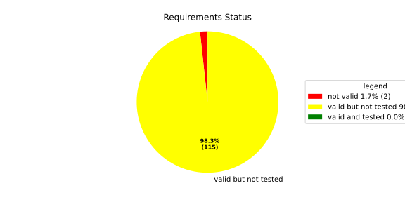
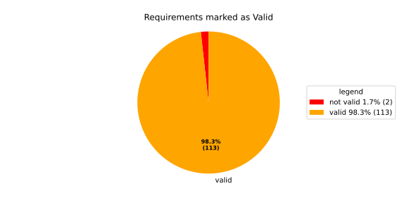
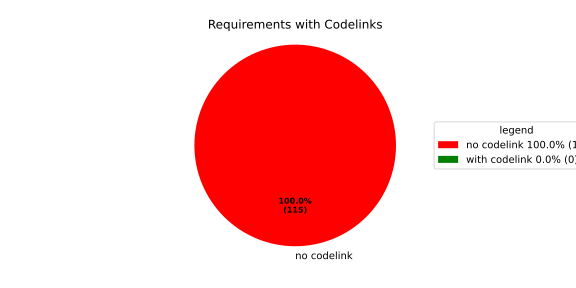

Component Requirements Statistics#
Overview#

In Detail#


No needs passed the filters
Failed Tests
Hint: This table should be empty. Before a PR can be merged all tests have to be successful.
No needs passed the filters
Skipped / Disabled Tests
No needs passed the filters
All passed Tests#
No needs passed the filters
Details About Testcases#
No needs passed the filters
No needs passed the filters
Test Log Files#
tests-report/score/health_monitor/src/rust/tests/test.log
exec ${PAGER:-/usr/bin/less} "$0" || exit 1
Executing tests from //score/health_monitor/src/rust:tests
-----------------------------------------------------------------------------
running 232 tests
test common::tests::duration_to_int_too_large - should panic ... ok
test common::tests::time_offset_diff_too_large - should panic ... ok
test common::tests::time_offset_valid ... ok
test common::tests::time_offset_wrong_order ... ok
test common::tests::time_range_from_interval_lower_too_large - should panic ... ok
test common::tests::time_range_from_interval_valid ... ok
test common::tests::time_range_new_valid ... ok
test common::tests::time_range_new_wrong_order - should panic ... ok
test deadline::common::tests::acquire_and_release_deadline ... ok
test deadline::common::tests::new_and_fields ... ok
test common::tests::duration_to_int_valid ... ok
test deadline::deadline_monitor::tests::deadline_failed_on_first_run_and_then_restarted_is_evaluated_as_error ... ok
test deadline::deadline_monitor::tests::deadline_outside_time_range_is_error_when_dropped_after_evaluate ... ok
test deadline::common::tests::concurrent_acquire ... ok
test deadline::deadline_monitor::tests::get_deadline_unknown_tag ... ok
test deadline::deadline_monitor::tests::start_stop_deadline_outside_ranges_is_evaluated_as_error ... ok
test deadline::deadline_monitor::tests::start_stop_deadline_outside_ranges_is_error_when_dropped_before_evaluate ... ok
test deadline::deadline_state::tests::as_u64_and_new ... ok
test deadline::deadline_state::tests::deadline_state_default_and_snapshot ... ok
test deadline::deadline_state::tests::deadline_state_update_none_returns_err ... ok
test deadline::deadline_state::tests::default_state ... ok
test deadline::deadline_state::tests::set_and_get_timestamp_ms ... ok
test deadline::deadline_state::tests::deadline_state_update_success ... ok
test deadline::deadline_state::tests::set_running ... ok
test deadline::deadline_state::tests::set_underrun ... ok
test deadline::ffi::tests::deadline_destroy_null_deadline ... ok
test deadline::ffi::tests::deadline_monitor_builder_add_deadline_invalid_range ... ok
test deadline::ffi::tests::deadline_monitor_builder_add_deadline_null_builder ... ok
test deadline::ffi::tests::deadline_monitor_builder_add_deadline_null_deadline_tag ... ok
test deadline::ffi::tests::deadline_monitor_builder_add_deadline_succeeds ... ok
test deadline::ffi::tests::deadline_monitor_builder_create_null_builder ... ok
test deadline::ffi::tests::deadline_monitor_builder_create_succeeds ... ok
test deadline::ffi::tests::deadline_monitor_builder_destroy_null_builder ... ok
test deadline::ffi::tests::deadline_monitor_destroy_null_monitor ... ok
test deadline::ffi::tests::deadline_monitor_get_deadline_null_deadline_handle ... ok
test deadline::ffi::tests::deadline_monitor_get_deadline_null_deadline_tag ... ok
test deadline::ffi::tests::deadline_monitor_get_deadline_null_monitor ... ok
test deadline::ffi::tests::deadline_monitor_get_deadline_unknown_deadline ... ok
test deadline::ffi::tests::deadline_monitor_get_deadline_succeeds ... ok
test deadline::ffi::tests::deadline_start_already_started ... ok
test deadline::ffi::tests::deadline_start_null_deadline ... ok
test deadline::ffi::tests::deadline_stop_null_deadline ... ok
test deadline::ffi::tests::deadline_start_succeeds ... ok
test deadline::ffi::tests::deadline_stop_succeeds ... ok
test ffi::tests::health_monitor_builder_add_deadline_monitor_null_deadline_monitor_builder ... ok
test ffi::tests::health_monitor_builder_add_deadline_monitor_null_hmon_builder ... ok
test ffi::tests::health_monitor_builder_add_deadline_monitor_null_monitor_tag ... ok
test ffi::tests::health_monitor_builder_add_deadline_monitor_succeeds ... ok
test ffi::tests::health_monitor_builder_add_heartbeat_monitor_null_hmon_builder ... ok
test ffi::tests::health_monitor_builder_add_heartbeat_monitor_null_heartbeat_monitor_builder ... ok
test ffi::tests::health_monitor_builder_add_heartbeat_monitor_null_monitor_tag ... ok
test ffi::tests::health_monitor_builder_add_heartbeat_monitor_succeeds ... ok
test ffi::tests::health_monitor_builder_add_logic_monitor_null_hmon_builder ... ok
test ffi::tests::health_monitor_builder_add_logic_monitor_null_logic_monitor_builder ... ok
test ffi::tests::health_monitor_builder_add_logic_monitor_null_monitor_tag ... ok
test ffi::tests::health_monitor_builder_add_logic_monitor_succeeds ... ok
test ffi::tests::health_monitor_builder_build_invalid_cycle_intervals ... ok
test ffi::tests::health_monitor_builder_build_no_monitors ... ok
test ffi::tests::health_monitor_builder_build_null_builder_handle ... ok
test ffi::tests::health_monitor_builder_build_null_monitor_handle ... ok
test ffi::tests::health_monitor_builder_build_succeeds ... ok
test ffi::tests::health_monitor_builder_build_thread_parameters ... ok
test ffi::tests::health_monitor_builder_build_valid_cycle_intervals_succeeds ... ok
test ffi::tests::health_monitor_builder_create_null_handle ... ok
test ffi::tests::health_monitor_builder_create_succeeds ... ok
test ffi::tests::health_monitor_builder_destroy_null_handle ... ok
test ffi::tests::health_monitor_destroy_null_hmon ... ok
test ffi::tests::health_monitor_get_deadline_monitor_already_taken ... ok
test ffi::tests::health_monitor_get_deadline_monitor_null_deadline_monitor ... ok
test ffi::tests::health_monitor_get_deadline_monitor_null_hmon ... ok
test ffi::tests::health_monitor_get_deadline_monitor_null_monitor_tag ... ok
test ffi::tests::health_monitor_get_deadline_monitor_succeeds ... ok
test ffi::tests::health_monitor_get_heartbeat_monitor_already_taken ... ok
test ffi::tests::health_monitor_get_heartbeat_monitor_null_heartbeat_monitor ... ok
test ffi::tests::health_monitor_get_heartbeat_monitor_null_monitor_tag ... ok
test ffi::tests::health_monitor_get_heartbeat_monitor_null_hmon ... ok
test ffi::tests::health_monitor_get_heartbeat_monitor_succeeds ... ok
test ffi::tests::health_monitor_get_logic_monitor_already_taken ... ok
test ffi::tests::health_monitor_get_logic_monitor_null_hmon ... ok
test ffi::tests::health_monitor_get_logic_monitor_null_logic_monitor ... ok
test ffi::tests::health_monitor_get_logic_monitor_null_monitor_tag ... ok
test ffi::tests::health_monitor_get_logic_monitor_succeeds ... ok
test ffi::tests::health_monitor_start_null_hmon ... ok
test ffi::tests::health_monitor_start_monitor_not_taken ... ok
test health_monitor::tests::health_monitor_builder_build_invalid_cycles ... ok
test health_monitor::tests::health_monitor_builder_build_no_monitors ... ok
test health_monitor::tests::health_monitor_builder_build_succeeds ... ok
test health_monitor::tests::health_monitor_builder_new_succeeds ... ok
test health_monitor::tests::health_monitor_get_deadline_monitor_available ... ok
test health_monitor::tests::health_monitor_get_deadline_monitor_invalid_state ... ok
test health_monitor::tests::health_monitor_get_deadline_monitor_taken ... ok
test health_monitor::tests::health_monitor_get_deadline_monitor_unknown ... ok
test health_monitor::tests::health_monitor_get_heartbeat_monitor_available ... ok
test health_monitor::tests::health_monitor_get_heartbeat_monitor_invalid_state ... ok
test health_monitor::tests::health_monitor_get_heartbeat_monitor_taken ... ok
test health_monitor::tests::health_monitor_get_heartbeat_monitor_unknown ... ok
test health_monitor::tests::health_monitor_get_logic_monitor_available ... ok
test health_monitor::tests::health_monitor_get_logic_monitor_invalid_state ... ok
[2026/06/01 13:07:08.7969051][7815][HMON][INFO] Monitoring thread started.
[2026/06/01 13:07:08.7969244][7815][HMON][INFO] Monitoring thread exiting.
test ffi::tests::health_monitor_start_succeeds ... ok
test health_monitor::tests::health_monitor_get_logic_monitor_taken ... ok
test health_monitor::tests::health_monitor_get_logic_monitor_unknown ... ok
[2026/06/01 13:07:08.7984349][7815][HMON][INFO] Monitoring thread started.
[2026/06/01 13:07:08.7984505][7815][HMON][INFO] Monitoring thread exiting.
test health_monitor::tests::health_monitor_start_monitors_not_taken - should panic ... ok
test health_monitor::tests::health_monitor_start_succeeds ... ok
test heartbeat::ffi::tests::heartbeat_monitor_builder_create_invalid_range ... ok
test heartbeat::ffi::tests::heartbeat_monitor_builder_create_null_builder ... ok
test heartbeat::ffi::tests::heartbeat_monitor_builder_create_succeeds ... ok
test heartbeat::ffi::tests::heartbeat_monitor_builder_destroy_null_builder ... ok
test heartbeat::ffi::tests::heartbeat_monitor_heartbeat_null_monitor ... ok
test heartbeat::ffi::tests::heartbeat_monitor_heartbeat_succeeds ... ok
test heartbeat::ffi::tests::heartbeat_monitor_destroy_null_monitor ... ok
test deadline::deadline_monitor::tests::monitor_with_multiple_running_deadlines ... ok
test heartbeat::heartbeat_monitor::tests::heartbeat_monitor_beat_early_evaluate_early ... ok
test heartbeat::heartbeat_monitor::tests::heartbeat_monitor_beat_early_evaluate_in_range ... ok
test heartbeat::heartbeat_monitor::tests::heartbeat_monitor_beat_in_range_evaluate_in_range ... ok
test heartbeat::heartbeat_monitor::tests::heartbeat_monitor_beat_early_evaluate_late ... ok
test heartbeat::heartbeat_monitor::tests::heartbeat_monitor_builder_build_invalid_internal_processing_cycle ... ok
test heartbeat::heartbeat_monitor::tests::heartbeat_monitor_builder_build_ok ... ok
test heartbeat::heartbeat_monitor::tests::heartbeat_monitor_beat_in_range_evaluate_late ... ok
test heartbeat::heartbeat_monitor::tests::heartbeat_monitor_beat_late_evaluate_late ... ok
test heartbeat::heartbeat_monitor::tests::heartbeat_monitor_cycle_early ... ok
test heartbeat::heartbeat_monitor::tests::heartbeat_monitor_multiple_beats_early_evaluate_early ... ok
test heartbeat::heartbeat_monitor::tests::heartbeat_monitor_cycle_in_range ... ok
test heartbeat::heartbeat_monitor::tests::heartbeat_monitor_multiple_beats_early_evaluate_in_range ... ok
test heartbeat::heartbeat_monitor::tests::heartbeat_monitor_multiple_beats_in_range_evaluate_in_range ... ok
test heartbeat::heartbeat_monitor::tests::heartbeat_monitor_cycle_late ... ok
test heartbeat::heartbeat_monitor::tests::heartbeat_monitor_multiple_beats_early_evaluate_late ... ok
test heartbeat::heartbeat_monitor::tests::heartbeat_monitor_no_beat_evaluate_early ... ok
test heartbeat::heartbeat_monitor::tests::heartbeat_monitor_no_beat_evaluate_in_range ... ok
test heartbeat::heartbeat_monitor::tests::heartbeat_monitor_multiple_beats_in_range_evaluate_late ... ok
test heartbeat::heartbeat_monitor::tests::heartbeat_monitor_multiple_beats_late_evaluate_late ... ok
test heartbeat::heartbeat_state::tests::snapshot_counter_increment ... ok
test heartbeat::heartbeat_state::tests::snapshot_default ... ok
test heartbeat::heartbeat_state::tests::snapshot_from_u64_max ... ok
test heartbeat::heartbeat_state::tests::snapshot_from_u64_valid ... ok
test heartbeat::heartbeat_state::tests::snapshot_from_u64_zero ... ok
test heartbeat::heartbeat_state::tests::snapshot_new_succeeds ... ok
test heartbeat::heartbeat_state::tests::snapshot_set_heartbeat_timestamp_out_of_range - should panic ... ok
test heartbeat::heartbeat_state::tests::snapshot_set_heartbeat_timestamp_valid ... ok
test heartbeat::heartbeat_state::tests::state_default ... ok
test heartbeat::heartbeat_state::tests::state_new ... ok
test heartbeat::heartbeat_state::tests::state_reset ... ok
test heartbeat::heartbeat_state::tests::state_snapshot ... ok
test heartbeat::heartbeat_state::tests::state_update_none ... ok
test heartbeat::heartbeat_state::tests::state_update_some ... ok
test logic::ffi::tests::logic_monitor_builder_add_state_null_allowed_states_many_elements ... ok
test logic::ffi::tests::logic_monitor_builder_add_state_null_allowed_states_zero_elements ... ok
test logic::ffi::tests::logic_monitor_builder_add_state_null_builder ... ok
test logic::ffi::tests::logic_monitor_builder_add_state_null_tag ... ok
test logic::ffi::tests::logic_monitor_builder_add_state_succeeds ... ok
test logic::ffi::tests::logic_monitor_builder_create_null_builder ... ok
test logic::ffi::tests::logic_monitor_builder_create_null_initial_state ... ok
test logic::ffi::tests::logic_monitor_builder_create_succeeds ... ok
test logic::ffi::tests::logic_monitor_builder_destroy_null_builder ... ok
test logic::ffi::tests::logic_monitor_destroy_null_monitor ... ok
test logic::ffi::tests::logic_monitor_state_fails ... ok
test logic::ffi::tests::logic_monitor_state_null_monitor ... ok
test logic::ffi::tests::logic_monitor_state_null_state ... ok
test logic::ffi::tests::logic_monitor_state_succeeds ... ok
test logic::ffi::tests::logic_monitor_transition_fails ... ok
test logic::ffi::tests::logic_monitor_transition_null_monitor ... ok
test logic::ffi::tests::logic_monitor_transition_null_target_state ... ok
test logic::ffi::tests::logic_monitor_transition_succeeds ... ok
test logic::logic_monitor::tests::logic_monitor_builder_build_no_states ... ok
test logic::logic_monitor::tests::logic_monitor_builder_build_succeeds ... ok
test logic::logic_monitor::tests::logic_monitor_builder_build_undefined_initial_state ... ok
test logic::logic_monitor::tests::logic_monitor_builder_build_undefined_target ... ok
test logic::logic_monitor::tests::logic_monitor_builder_new_succeeds ... ok
test logic::logic_monitor::tests::logic_monitor_evaluate_invalid_state ... ok
test logic::logic_monitor::tests::logic_monitor_evaluate_invalid_transition ... ok
test logic::logic_monitor::tests::logic_monitor_evaluate_succeeds ... ok
test logic::logic_monitor::tests::logic_monitor_state_indeterminate_current_state ... ok
test logic::logic_monitor::tests::logic_monitor_state_succeeds ... ok
test logic::logic_monitor::tests::logic_monitor_transition_indeterminate_current_state ... ok
test logic::logic_monitor::tests::logic_monitor_transition_invalid_transition ... ok
test logic::logic_monitor::tests::logic_monitor_transition_succeeds ... ok
test logic::logic_monitor::tests::logic_monitor_transition_unknown_node ... ok
test logic::logic_state::tests::snapshot_from_u64_max ... ok
test logic::logic_state::tests::snapshot_from_u64_valid ... ok
test logic::logic_state::tests::snapshot_from_u64_zero ... ok
test logic::logic_state::tests::snapshot_new_succeeds ... ok
test logic::logic_state::tests::snapshot_set_current_state_index_valid ... ok
test logic::logic_state::tests::snapshot_set_heartbeat_timestamp_out_of_range - should panic ... ok
test logic::logic_state::tests::snapshot_set_monitor_status_valid ... ok
test logic::logic_state::tests::state_new ... ok
test logic::logic_state::tests::state_snapshot ... ok
test logic::logic_state::tests::state_swap ... ok
test tag::tests::deadline_tag_debug ... ok
test tag::tests::deadline_tag_from_str ... ok
test tag::tests::deadline_tag_from_string ... ok
test tag::tests::deadline_tag_new ... ok
test tag::tests::deadline_tag_score_debug ... ok
test tag::tests::monitor_tag_debug ... ok
test tag::tests::monitor_tag_from_str ... ok
test tag::tests::monitor_tag_from_string ... ok
test tag::tests::monitor_tag_new ... ok
test tag::tests::monitor_tag_score_debug ... ok
test tag::tests::state_tag_debug ... ok
test tag::tests::state_tag_from_str ... ok
test tag::tests::state_tag_from_string ... ok
test tag::tests::state_tag_new ... ok
test tag::tests::state_tag_score_debug ... ok
test tag::tests::tag_debug ... ok
test tag::tests::tag_hash_is_eq ... ok
test tag::tests::tag_hash_is_ne ... ok
test tag::tests::tag_new ... ok
test tag::tests::tag_partial_eq_is_eq ... ok
test tag::tests::tag_partial_eq_is_ne ... ok
test tag::tests::tag_score_debug ... ok
test tag::tests::test_from_str ... ok
test tag::tests::test_from_string ... ok
test thread_ffi::tests::scheduler_policy_priority_max_null_priority ... ok
test thread_ffi::tests::scheduler_policy_priority_max_succeeds ... ok
test thread_ffi::tests::scheduler_policy_priority_min_null_priority ... ok
test thread_ffi::tests::scheduler_policy_priority_min_succeeds ... ok
test thread_ffi::tests::thread_parameters_affinity_null_affinity_many_elements ... ok
test thread_ffi::tests::thread_parameters_affinity_null_affinity_zero_elements ... ok
test thread_ffi::tests::thread_parameters_affinity_null_handle ... ok
test thread_ffi::tests::thread_parameters_affinity_succeeds ... ok
test thread_ffi::tests::thread_parameters_create_succeeds ... ok
test thread_ffi::tests::thread_parameters_destroy_null_handle ... ok
test thread_ffi::tests::thread_parameters_scheduler_parameters_invalid_priority ... ok
test thread_ffi::tests::thread_parameters_scheduler_parameters_null_handle ... ok
test thread_ffi::tests::thread_parameters_scheduler_parameters_succeeds ... ok
test thread_ffi::tests::thread_parameters_stack_size_null_handle ... ok
test thread_ffi::tests::thread_parameters_stack_size_succeeds ... ok
test worker::tests::monitoring_logic_report_alive_on_each_call_when_no_error ... ok
test heartbeat::heartbeat_monitor::tests::heartbeat_monitor_no_beat_evaluate_late ... ok
test worker::tests::monitoring_logic_report_error_when_deadline_failed ... ok
[2026/06/01 13:07:09.7562980][7815][HMON][INFO] Monitoring thread started.
test deadline::deadline_monitor::tests::start_stop_deadline_within_range_works ... ok
[2026/06/01 13:07:09.8167115][7815][HMON][WARN] Deadline (DeadlineTag(deadline_fast)) missed! Expected: 50, now: 60
[2026/06/01 13:07:09.8167394][7815][HMON][WARN] Deadline monitor with tag MonitorTag(deadline_monitor) reported error: TooLate.
[2026/06/01 13:07:09.8167466][7815][HMON][WARN] One or more monitors reported errors, skipping AliveAPI notification.
[2026/06/01 13:07:09.8167535][7815][HMON][INFO] Monitoring logic failed, stopping thread.
[2026/06/01 13:07:09.8167586][7815][HMON][INFO] Monitoring thread exiting.
test worker::tests::monitoring_logic_report_alive_respect_cycle ... ok
test worker::tests::unique_thread_runner_monitoring_works ... ok
test heartbeat::heartbeat_monitor::tests::heartbeat_monitor_timestamp_offset ... ok
test result: ok. 232 passed; 0 failed; 0 ignored; 0 measured; 0 filtered out; finished in 1.27s
tests-report/score/health_monitor/src/rust/loom_tests/test.log
exec ${PAGER:-/usr/bin/less} "$0" || exit 1
Executing tests from //score/health_monitor/src/rust:loom_tests
-----------------------------------------------------------------------------
running 3 tests
test heartbeat::heartbeat_monitor::loom_tests::heartbeat_monitor_heartbeat_evaluate_too_early ... ok
test heartbeat::heartbeat_monitor::loom_tests::heartbeat_monitor_heartbeat_evaluate_in_range ... ok
test heartbeat::heartbeat_monitor::loom_tests::heartbeat_monitor_heartbeat_evaluate_too_late ... ok
test result: ok. 3 passed; 0 failed; 0 ignored; 0 measured; 0 filtered out; finished in 0.71s
tests-report/score/health_monitor/src/cpp/cpp_tests/test.log
exec ${PAGER:-/usr/bin/less} "$0" || exit 1
Executing tests from //score/health_monitor/src/cpp:cpp_tests
-----------------------------------------------------------------------------
Running main() from gmock_main.cc
[==========] Running 1 test from 1 test suite.
[----------] Global test environment set-up.
[----------] 1 test from HealthMonitorTest
[ RUN ] HealthMonitorTest.TestName
[2026/06/01 13:07:10.0989262][score/health_monitor/src/rust/worker.rs:121][8244][HMON][INFO] Monitoring thread started.
[2026/06/01 13:07:10.0990149][score/health_monitor/src/rust/deadline/deadline_monitor.rs:217][8244][HMON][ERROR] Deadline DeadlineTag(deadline_1) stopped too early by 100 ms
[2026/06/01 13:07:10.1497675][score/health_monitor/src/rust/deadline/deadline_monitor.rs:267][8244][HMON][WARN] Deadline (DeadlineTag(deadline_1)) finished too early!
[2026/06/01 13:07:10.1497986][score/health_monitor/src/rust/worker.rs:58][8244][HMON][WARN] Deadline monitor with tag MonitorTag(deadline_monitor) reported error: TooEarly.
[2026/06/01 13:07:10.1498095][score/health_monitor/src/rust/heartbeat/heartbeat_monitor.rs:253][8244][HMON][WARN] Heartbeat occurred too early, offset to range: 100
[2026/06/01 13:07:10.1498145][score/health_monitor/src/rust/worker.rs:64][8244][HMON][WARN] Heartbeat monitor with tag MonitorTag(heartbeat_monitor) reported error: TooEarly.
[2026/06/01 13:07:10.1498203][score/health_monitor/src/rust/worker.rs:85][8244][HMON][WARN] One or more monitors reported errors, skipping AliveAPI notification.
[2026/06/01 13:07:10.1498247][score/health_monitor/src/rust/worker.rs:132][8244][HMON][INFO] Monitoring logic failed, stopping thread.
[2026/06/01 13:07:10.1498288][score/health_monitor/src/rust/worker.rs:139][8244][HMON][INFO] Monitoring thread exiting.
[ OK ] HealthMonitorTest.TestName (51 ms)
[----------] 1 test from HealthMonitorTest (51 ms total)
[----------] Global test environment tear-down
[==========] 1 test from 1 test suite ran. (51 ms total)
[ PASSED ] 1 test.
tests-report/score/launch_manager/daemon/src/process_state_client/process_state_client_ut/test.log
exec ${PAGER:-/usr/bin/less} "$0" || exit 1
Executing tests from //score/launch_manager/daemon/src/process_state_client:process_state_client_ut
-----------------------------------------------------------------------------
Running main() from gmock_main.cc
[==========] Running 4 tests from 1 test suite.
[----------] Global test environment set-up.
[----------] 4 tests from ProcessStateClient_UT
[ RUN ] ProcessStateClient_UT.ProcessStateClient_ConstructReceiver_Succeeds
[ OK ] ProcessStateClient_UT.ProcessStateClient_ConstructReceiver_Succeeds (0 ms)
[ RUN ] ProcessStateClient_UT.ProcessStateClient_QueueOneProcess_Succeeds
[ OK ] ProcessStateClient_UT.ProcessStateClient_QueueOneProcess_Succeeds (0 ms)
[ RUN ] ProcessStateClient_UT.ProcessStateClient_QueueMaxNumberOfProcesses_Succeeds
[ OK ] ProcessStateClient_UT.ProcessStateClient_QueueMaxNumberOfProcesses_Succeeds (8 ms)
[ RUN ] ProcessStateClient_UT.ProcessStateClient_QueueOneProcessTooMany_Fails
mw::log initialization error: Error No logging configuration files could be found. occurred with context information: Failed to load configuration files. Fallback to console logging.
2026/06/01 13:07:07.9227519 1538361 000 ECU1 NONE LM log error verbose 1 Failed to queue posix process
2026/06/01 13:07:07.9227520 1538363 000 ECU1 NONE LM log error verbose 1 ProcessStateReceiver::getNextChangedPosixProcess: Overflow occurred, will be reported as kCommunicationError
[ OK ] ProcessStateClient_UT.ProcessStateClient_QueueOneProcessTooMany_Fails (5 ms)
[----------] 4 tests from ProcessStateClient_UT (15 ms total)
[----------] Global test environment tear-down
[==========] 4 tests from 1 test suite ran. (15 ms total)
[ PASSED ] 4 tests.
tests-report/score/launch_manager/daemon/src/recovery_client/recovery_client_UT/test.log
exec ${PAGER:-/usr/bin/less} "$0" || exit 1
Executing tests from //score/launch_manager/daemon/src/recovery_client:recovery_client_UT
-----------------------------------------------------------------------------
Running main() from gmock_main.cc
[==========] Running 5 tests from 1 test suite.
[----------] Global test environment set-up.
[----------] 5 tests from RecoveryClientTest
[ RUN ] RecoveryClientTest.SendSingleRequest
[ OK ] RecoveryClientTest.SendSingleRequest (0 ms)
[ RUN ] RecoveryClientTest.GetNextRequest
[ OK ] RecoveryClientTest.GetNextRequest (0 ms)
[ RUN ] RecoveryClientTest.GetNextRequestEmpty
[ OK ] RecoveryClientTest.GetNextRequestEmpty (0 ms)
[ RUN ] RecoveryClientTest.RingBufferFull
[ OK ] RecoveryClientTest.RingBufferFull (0 ms)
[ RUN ] RecoveryClientTest.FIFOOrdering
[ OK ] RecoveryClientTest.FIFOOrdering (0 ms)
[----------] 5 tests from RecoveryClientTest (0 ms total)
[----------] Global test environment tear-down
[==========] 5 tests from 1 test suite ran. (0 ms total)
[ PASSED ] 5 tests.
tests-report/score/launch_manager/daemon/src/alive_monitor/details/recovery/Notification_UT/test.log
exec ${PAGER:-/usr/bin/less} "$0" || exit 1
Executing tests from //score/launch_manager/daemon/src/alive_monitor/details/recovery:Notification_UT
-----------------------------------------------------------------------------
Running main() from gmock_main.cc
[==========] Running 5 tests from 2 test suites.
[----------] Global test environment set-up.
[----------] 4 tests from NotificationWithConfigTest
[ RUN ] NotificationWithConfigTest.CanGetNotificationName
mw::log initialization error: Error No logging configuration files could be found. occurred with context information: Failed to load configuration files. Fallback to console logging.
[ OK ] NotificationWithConfigTest.CanGetNotificationName (3 ms)
[ RUN ] NotificationWithConfigTest.SendsRequestAndNeverTimesOut
[ OK ] NotificationWithConfigTest.SendsRequestAndNeverTimesOut (0 ms)
[ RUN ] NotificationWithConfigTest.TimesOutWhenSendingRequestFails
2026/06/01 13:07:07.9227947 1542634 000 ECU1 NONE Rcvy log error verbose 2 Notification (TestNotification) Failed to enqueue recovery request (ring buffer full)
[ OK ] NotificationWithConfigTest.TimesOutWhenSendingRequestFails (1 ms)
[ RUN ] NotificationWithConfigTest.ProxyInitializationFails
2026/06/01 13:07:07.9227947 1542641 000 ECU1 NONE Rcvy log error verbose 3 Notification (TestNotification) Invalid ProcessGroupState identifier: InvalidIdentifier
[ OK ] NotificationWithConfigTest.ProxyInitializationFails (0 ms)
[----------] 4 tests from NotificationWithConfigTest (6 ms total)
[----------] 1 test from NotificationWithoutConfigTest
[ RUN ] NotificationWithoutConfigTest.WatchdogNotificationGoesDirectlyToTimeout
[ OK ] NotificationWithoutConfigTest.WatchdogNotificationGoesDirectlyToTimeout (1 ms)
[----------] 1 test from NotificationWithoutConfigTest (2 ms total)
[----------] Global test environment tear-down
[==========] 5 tests from 2 test suites ran. (10 ms total)
[ PASSED ] 5 tests.
tests-report/score/launch_manager/daemon/src/common/identifier_hash_UT/test.log
exec ${PAGER:-/usr/bin/less} "$0" || exit 1
Executing tests from //score/launch_manager/daemon/src/common:identifier_hash_UT
-----------------------------------------------------------------------------
Running main() from gmock_main.cc
[==========] Running 7 tests from 1 test suite.
[----------] Global test environment set-up.
[----------] 7 tests from IdentifierHashTest
[ RUN ] IdentifierHashTest.IdentifierHash_with_string_view_created
[ OK ] IdentifierHashTest.IdentifierHash_with_string_view_created (0 ms)
[ RUN ] IdentifierHashTest.IdentifierHash_with_string_created
[ OK ] IdentifierHashTest.IdentifierHash_with_string_created (0 ms)
[ RUN ] IdentifierHashTest.IdentifierHash_default_created
[ OK ] IdentifierHashTest.IdentifierHash_default_created (0 ms)
[ RUN ] IdentifierHashTest.IdentifierHash_invalid_hash_no_string_representation
[ OK ] IdentifierHashTest.IdentifierHash_invalid_hash_no_string_representation (0 ms)
[ RUN ] IdentifierHashTest.IdentifierHash_no_dangling_pointer_after_source_string_dies
[ OK ] IdentifierHashTest.IdentifierHash_no_dangling_pointer_after_source_string_dies (0 ms)
[ RUN ] IdentifierHashTest.IdentifierHash_EqualityOperators
[ OK ] IdentifierHashTest.IdentifierHash_EqualityOperators (0 ms)
[ RUN ] IdentifierHashTest.IdentifierHash_LessThanOperator
[ OK ] IdentifierHashTest.IdentifierHash_LessThanOperator (0 ms)
[----------] 7 tests from IdentifierHashTest (0 ms total)
[----------] Global test environment tear-down
[==========] 7 tests from 1 test suite ran. (0 ms total)
[ PASSED ] 7 tests.
tests-report/score/launch_manager/daemon/src/common/concurrency/mpmc_concurrent_queue_tsan_test/test.log
exec ${PAGER:-/usr/bin/less} "$0" || exit 1
Executing tests from //score/launch_manager/daemon/src/common/concurrency:mpmc_concurrent_queue_tsan_test
-----------------------------------------------------------------------------
Running main() from gmock_main.cc
[==========] Running 15 tests from 5 test suites.
[----------] Global test environment set-up.
[----------] 5 tests from MPMCConcurrentQueueTest_Basic
[ RUN ] MPMCConcurrentQueueTest_Basic.PushAndPopSingleItem
[ OK ] MPMCConcurrentQueueTest_Basic.PushAndPopSingleItem (0 ms)
[ RUN ] MPMCConcurrentQueueTest_Basic.PushAndPopPreservesOrder
[ OK ] MPMCConcurrentQueueTest_Basic.PushAndPopPreservesOrder (0 ms)
[ RUN ] MPMCConcurrentQueueTest_Basic.LvaluePushCopiesItem
[ OK ] MPMCConcurrentQueueTest_Basic.LvaluePushCopiesItem (0 ms)
[ RUN ] MPMCConcurrentQueueTest_Basic.RvaluePushWorksWithMoveOnlyType
[ OK ] MPMCConcurrentQueueTest_Basic.RvaluePushWorksWithMoveOnlyType (0 ms)
[ RUN ] MPMCConcurrentQueueTest_Basic.PopReturnsNulloptOnSemaphoreWaitFailure
[ OK ] MPMCConcurrentQueueTest_Basic.PopReturnsNulloptOnSemaphoreWaitFailure (20 ms)
[----------] 5 tests from MPMCConcurrentQueueTest_Basic (21 ms total)
[----------] 2 tests from MPMCConcurrentQueueTest_Timeout
[ RUN ] MPMCConcurrentQueueTest_Timeout.PushWithTimeoutSucceedsWhenSlotAvailable
[ OK ] MPMCConcurrentQueueTest_Timeout.PushWithTimeoutSucceedsWhenSlotAvailable (0 ms)
[ RUN ] MPMCConcurrentQueueTest_Timeout.PushWithTimeoutReturnsFalseWhenFull
[ OK ] MPMCConcurrentQueueTest_Timeout.PushWithTimeoutReturnsFalseWhenFull (20 ms)
[----------] 2 tests from MPMCConcurrentQueueTest_Timeout (20 ms total)
[----------] 3 tests from MPMCConcurrentQueueTest_Stop
[ RUN ] MPMCConcurrentQueueTest_Stop.PushReturnsFalseAfterStop
[ OK ] MPMCConcurrentQueueTest_Stop.PushReturnsFalseAfterStop (0 ms)
[ RUN ] MPMCConcurrentQueueTest_Stop.PopReturnsNulloptWhenStoppedAndEmpty
[ OK ] MPMCConcurrentQueueTest_Stop.PopReturnsNulloptWhenStoppedAndEmpty (0 ms)
[ RUN ] MPMCConcurrentQueueTest_Stop.ItemsAreDroppedAfterStop
[ OK ] MPMCConcurrentQueueTest_Stop.ItemsAreDroppedAfterStop (0 ms)
[----------] 3 tests from MPMCConcurrentQueueTest_Stop (0 ms total)
[----------] 4 tests from MPMCConcurrentQueueTest_Blocking
[ RUN ] MPMCConcurrentQueueTest_Blocking.PopBlocksUntilItemAvailable
[ OK ] MPMCConcurrentQueueTest_Blocking.PopBlocksUntilItemAvailable (0 ms)
[ RUN ] MPMCConcurrentQueueTest_Blocking.PushBlocksWhenFull
[ OK ] MPMCConcurrentQueueTest_Blocking.PushBlocksWhenFull (0 ms)
[ RUN ] MPMCConcurrentQueueTest_Blocking.StopUnblocksBlockedConsumer
[ OK ] MPMCConcurrentQueueTest_Blocking.StopUnblocksBlockedConsumer (0 ms)
[ RUN ] MPMCConcurrentQueueTest_Blocking.StopUnblocksBlockedProducer
[ OK ] MPMCConcurrentQueueTest_Blocking.StopUnblocksBlockedProducer (0 ms)
[----------] 4 tests from MPMCConcurrentQueueTest_Blocking (0 ms total)
[----------] 1 test from MPMCConcurrentQueueTest_MPMC
[ RUN ] MPMCConcurrentQueueTest_MPMC.AllItemsDelivered
[ OK ] MPMCConcurrentQueueTest_MPMC.AllItemsDelivered (1 ms)
[----------] 1 test from MPMCConcurrentQueueTest_MPMC (1 ms total)
[----------] Global test environment tear-down
[==========] 15 tests from 5 test suites ran. (45 ms total)
[ PASSED ] 15 tests.
tests-report/score/launch_manager/daemon/src/common/concurrency/mpmc_concurrent_queue_test/test.log
exec ${PAGER:-/usr/bin/less} "$0" || exit 1
Executing tests from //score/launch_manager/daemon/src/common/concurrency:mpmc_concurrent_queue_test
-----------------------------------------------------------------------------
Running main() from gmock_main.cc
[==========] Running 15 tests from 5 test suites.
[----------] Global test environment set-up.
[----------] 5 tests from MPMCConcurrentQueueTest_Basic
[ RUN ] MPMCConcurrentQueueTest_Basic.PushAndPopSingleItem
[ OK ] MPMCConcurrentQueueTest_Basic.PushAndPopSingleItem (0 ms)
[ RUN ] MPMCConcurrentQueueTest_Basic.PushAndPopPreservesOrder
[ OK ] MPMCConcurrentQueueTest_Basic.PushAndPopPreservesOrder (0 ms)
[ RUN ] MPMCConcurrentQueueTest_Basic.LvaluePushCopiesItem
[ OK ] MPMCConcurrentQueueTest_Basic.LvaluePushCopiesItem (0 ms)
[ RUN ] MPMCConcurrentQueueTest_Basic.RvaluePushWorksWithMoveOnlyType
[ OK ] MPMCConcurrentQueueTest_Basic.RvaluePushWorksWithMoveOnlyType (0 ms)
[ RUN ] MPMCConcurrentQueueTest_Basic.PopReturnsNulloptOnSemaphoreWaitFailure
[ OK ] MPMCConcurrentQueueTest_Basic.PopReturnsNulloptOnSemaphoreWaitFailure (20 ms)
[----------] 5 tests from MPMCConcurrentQueueTest_Basic (20 ms total)
[----------] 2 tests from MPMCConcurrentQueueTest_Timeout
[ RUN ] MPMCConcurrentQueueTest_Timeout.PushWithTimeoutSucceedsWhenSlotAvailable
[ OK ] MPMCConcurrentQueueTest_Timeout.PushWithTimeoutSucceedsWhenSlotAvailable (0 ms)
[ RUN ] MPMCConcurrentQueueTest_Timeout.PushWithTimeoutReturnsFalseWhenFull
[ OK ] MPMCConcurrentQueueTest_Timeout.PushWithTimeoutReturnsFalseWhenFull (20 ms)
[----------] 2 tests from MPMCConcurrentQueueTest_Timeout (20 ms total)
[----------] 3 tests from MPMCConcurrentQueueTest_Stop
[ RUN ] MPMCConcurrentQueueTest_Stop.PushReturnsFalseAfterStop
[ OK ] MPMCConcurrentQueueTest_Stop.PushReturnsFalseAfterStop (0 ms)
[ RUN ] MPMCConcurrentQueueTest_Stop.PopReturnsNulloptWhenStoppedAndEmpty
[ OK ] MPMCConcurrentQueueTest_Stop.PopReturnsNulloptWhenStoppedAndEmpty (0 ms)
[ RUN ] MPMCConcurrentQueueTest_Stop.ItemsAreDroppedAfterStop
[ OK ] MPMCConcurrentQueueTest_Stop.ItemsAreDroppedAfterStop (0 ms)
[----------] 3 tests from MPMCConcurrentQueueTest_Stop (0 ms total)
[----------] 4 tests from MPMCConcurrentQueueTest_Blocking
[ RUN ] MPMCConcurrentQueueTest_Blocking.PopBlocksUntilItemAvailable
[ OK ] MPMCConcurrentQueueTest_Blocking.PopBlocksUntilItemAvailable (0 ms)
[ RUN ] MPMCConcurrentQueueTest_Blocking.PushBlocksWhenFull
[ OK ] MPMCConcurrentQueueTest_Blocking.PushBlocksWhenFull (0 ms)
[ RUN ] MPMCConcurrentQueueTest_Blocking.StopUnblocksBlockedConsumer
[ OK ] MPMCConcurrentQueueTest_Blocking.StopUnblocksBlockedConsumer (0 ms)
[ RUN ] MPMCConcurrentQueueTest_Blocking.StopUnblocksBlockedProducer
[ OK ] MPMCConcurrentQueueTest_Blocking.StopUnblocksBlockedProducer (0 ms)
[----------] 4 tests from MPMCConcurrentQueueTest_Blocking (0 ms total)
[----------] 1 test from MPMCConcurrentQueueTest_MPMC
[ RUN ] MPMCConcurrentQueueTest_MPMC.AllItemsDelivered
[ OK ] MPMCConcurrentQueueTest_MPMC.AllItemsDelivered (0 ms)
[----------] 1 test from MPMCConcurrentQueueTest_MPMC (0 ms total)
[----------] Global test environment tear-down
[==========] 15 tests from 5 test suites ran. (42 ms total)
[ PASSED ] 15 tests.
tests-report/tests/integration/smoke/smoke/test.log
exec ${PAGER:-/usr/bin/less} "$0" || exit 1
Executing tests from //tests/integration/smoke:smoke
-----------------------------------------------------------------------------
============================= test session starts ==============================
platform linux -- Python 3.12.12, pytest-9.0.3, pluggy-1.5.0
rootdir: /home/runner/.bazel/sandbox/processwrapper-sandbox/871/execroot/_main/bazel-out/k8-fastbuild/bin/tests/integration/smoke/smoke.runfiles/score_itf+
configfile: pytest.ini
collected 1 item
../score_itf+::test_smoke
-------------------------------- live log setup --------------------------------
[2026-06-02 12:54:36.220] [INFO] [score.itf.plugins.docker] Executing custom image bootstrap command: tests/utils/environments/x86_64-linux/x86_64-linux.sh
[2026-06-02 12:54:40.291] [DEBUG] [docker.utils.config] Trying paths: ['/home/runner/.docker/config.json', '/home/runner/.dockercfg']
[2026-06-02 12:54:40.291] [DEBUG] [docker.utils.config] Found file at path: /home/runner/.docker/config.json
[2026-06-02 12:54:40.292] [DEBUG] [docker.auth] Found 'auths' section
[2026-06-02 12:54:40.292] [DEBUG] [docker.auth] Found entry (registry='https://index.docker.io/v1/', username='githubactions')
[2026-06-02 12:54:40.308] [DEBUG] [urllib3.connectionpool] http://localhost:None "GET /version HTTP/1.1" 200 823
[2026-06-02 12:54:40.353] [DEBUG] [urllib3.connectionpool] http://localhost:None "POST /v1.48/containers/create HTTP/1.1" 201 88
[2026-06-02 12:54:40.355] [DEBUG] [urllib3.connectionpool] http://localhost:None "GET /v1.48/containers/38c75d3bf427761e2a463366c813860c9c0c63ec00215654a84df3eea8a58a7c/json HTTP/1.1" 200 None
[2026-06-02 12:54:40.547] [DEBUG] [urllib3.connectionpool] http://localhost:None "POST /v1.48/containers/38c75d3bf427761e2a463366c813860c9c0c63ec00215654a84df3eea8a58a7c/start HTTP/1.1" 204 0
[2026-06-02 12:54:40.548] [DEBUG] [docker.utils.config] Trying paths: ['/home/runner/.docker/config.json', '/home/runner/.dockercfg']
[2026-06-02 12:54:40.548] [DEBUG] [docker.utils.config] Found file at path: /home/runner/.docker/config.json
[2026-06-02 12:54:40.548] [DEBUG] [docker.auth] Found 'auths' section
[2026-06-02 12:54:40.548] [DEBUG] [docker.auth] Found entry (registry='https://index.docker.io/v1/', username='githubactions')
[2026-06-02 12:54:40.556] [DEBUG] [urllib3.connectionpool] http://localhost:None "GET /version HTTP/1.1" 200 823
[2026-06-02 12:54:40.558] [DEBUG] [urllib3.connectionpool] http://localhost:None "POST /v1.48/containers/38c75d3bf427761e2a463366c813860c9c0c63ec00215654a84df3eea8a58a7c/exec HTTP/1.1" 201 74
[2026-06-02 12:54:40.559] [DEBUG] [urllib3.connectionpool] http://localhost:None "POST /v1.48/exec/f88c81c80468645f54eb05115d3f4548dae7c64d3fb9103fbafba5de714c7daf/start HTTP/1.1" 101 0
[2026-06-02 12:54:40.608] [DEBUG] [urllib3.connectionpool] http://localhost:None "GET /v1.48/exec/f88c81c80468645f54eb05115d3f4548dae7c64d3fb9103fbafba5de714c7daf/json HTTP/1.1" 200 390
[2026-06-02 12:54:40.645] [DEBUG] [urllib3.connectionpool] http://localhost:None "PUT /v1.48/containers/38c75d3bf427761e2a463366c813860c9c0c63ec00215654a84df3eea8a58a7c/archive?path=%2Ftmp HTTP/1.1" 200 0
[2026-06-02 12:54:40.647] [DEBUG] [urllib3.connectionpool] http://localhost:None "POST /v1.48/containers/38c75d3bf427761e2a463366c813860c9c0c63ec00215654a84df3eea8a58a7c/exec HTTP/1.1" 201 74
[2026-06-02 12:54:40.648] [DEBUG] [urllib3.connectionpool] http://localhost:None "POST /v1.48/exec/0bbf553935dcb9e42dfbde96a11d580a0aa314b094abc54c74c7bee93f561f95/start HTTP/1.1" 101 0
[2026-06-02 12:54:40.712] [DEBUG] [urllib3.connectionpool] http://localhost:None "GET /v1.48/exec/0bbf553935dcb9e42dfbde96a11d580a0aa314b094abc54c74c7bee93f561f95/json HTTP/1.1" 200 416
[2026-06-02 12:54:40.712] [INFO] [tests.utils.testing_utils.setup_test] Test case setup finished
-------------------------------- live log call ---------------------------------
[2026-06-02 12:54:40.714] [DEBUG] [urllib3.connectionpool] http://localhost:None "POST /v1.48/containers/38c75d3bf427761e2a463366c813860c9c0c63ec00215654a84df3eea8a58a7c/exec HTTP/1.1" 201 74
[2026-06-02 12:54:40.715] [DEBUG] [urllib3.connectionpool] http://localhost:None "POST /v1.48/exec/720719ddafff1e5da6ccbbb6b56dcd37f96a5b1f5a669bf641cb526cf46e89f1/start HTTP/1.1" 101 0
[2026-06-02 12:54:40.755] [DEBUG] [urllib3.connectionpool] http://localhost:None "GET /v1.48/exec/720719ddafff1e5da6ccbbb6b56dcd37f96a5b1f5a669bf641cb526cf46e89f1/json HTTP/1.1" 200 404
[2026-06-02 12:54:40.756] [DEBUG] [urllib3.connectionpool] http://localhost:None "POST /v1.48/containers/38c75d3bf427761e2a463366c813860c9c0c63ec00215654a84df3eea8a58a7c/exec HTTP/1.1" 201 74
[2026-06-02 12:54:40.757] [DEBUG] [urllib3.connectionpool] http://localhost:None "POST /v1.48/exec/2033d7542680be112d1b1f6f97f0d5260bdc4aaaf9bdfb18bd399ffce2218f8f/start HTTP/1.1" 101 0
[2026-06-02 12:54:40.800] [INFO] [launch_manager] mw::log initialization error: Error No logging configuration files could be found. occurred with context information: Failed to load configuration files. Fallback to console logging.
[2026-06-02 12:54:40.801] [INFO] [launch_manager] 2026/06/02 12:54:40.4880799 1431804 000 ECU1 NONE Fcty log warn verbose 2 Factory for FlatCfg MachineConfig: No watchdog configured
[2026-06-02 12:54:40.801] [DEBUG] [urllib3.connectionpool] http://localhost:None "GET /v1.48/exec/2033d7542680be112d1b1f6f97f0d5260bdc4aaaf9bdfb18bd399ffce2218f8f/json HTTP/1.1" 200 442
[2026-06-02 12:54:40.802] [DEBUG] [urllib3.connectionpool] http://localhost:None "POST /v1.48/containers/38c75d3bf427761e2a463366c813860c9c0c63ec00215654a84df3eea8a58a7c/exec HTTP/1.1" 201 74
[2026-06-02 12:54:40.803] [INFO] [launch_manager] [==========] Running 1 test from 1 test suite.
[2026-06-02 12:54:40.803] [INFO] [launch_manager] [----------] Global test environment set-up.
[2026-06-02 12:54:40.803] [INFO] [launch_manager] [----------] 1 test from Smoke
[2026-06-02 12:54:40.804] [INFO] [launch_manager] [ RUN ] Smoke.Daemon
[2026-06-02 12:54:40.804] [INFO] [launch_manager] [ STEP ] Control daemon report kRunning
[2026-06-02 12:54:40.804] [DEBUG] [urllib3.connectionpool] http://localhost:None "POST /v1.48/exec/334cf7f90c6261940bacd1fb29697b9a1310daa2403f18ed3f9aae60a304e3d0/start HTTP/1.1" 101 0
[2026-06-02 12:54:40.805] [INFO] [launch_manager] [ END STEP ] Control daemon report kRunning
[2026-06-02 12:54:40.805] [INFO] [launch_manager] [ STEP ] Activate RunTarget Running
[2026-06-02 12:54:40.805] [INFO] [launch_manager] mw::log initialization error: Error No logging configuration files could be found. occurred with context information: Failed to load configuration files. Fallback to console logging.
[2026-06-02 12:54:40.806] [INFO] [launch_manager] 2026/06/02 12:54:40.4880806 1431877 000 ECU1 NONE LM log fatal verbose 3 clock() at failed initial state transition: 31.931000 ms
[2026-06-02 12:54:40.811] [INFO] [launch_manager] [==========] Running 1 test from 1 test suite.
[2026-06-02 12:54:40.811] [INFO] [launch_manager] [----------] Global test environment set-up.
[2026-06-02 12:54:40.811] [INFO] [launch_manager] [----------] 1 test from Smoke
[2026-06-02 12:54:40.811] [INFO] [launch_manager] [ RUN ] Smoke.Process
[2026-06-02 12:54:40.813] [INFO] [launch_manager] [ OK ] Smoke.Process (2 ms)
[2026-06-02 12:54:40.813] [INFO] [launch_manager] [----------] 1 test from Smoke (2 ms total)
[2026-06-02 12:54:40.813] [INFO] [launch_manager] [----------] Global test environment tear-down
[2026-06-02 12:54:40.813] [INFO] [launch_manager] [==========] 1 test from 1 test suite ran. (2 ms total)
[2026-06-02 12:54:40.814] [INFO] [launch_manager] [ PASSED ] 1 test.
[2026-06-02 12:54:40.847] [DEBUG] [urllib3.connectionpool] http://localhost:None "GET /v1.48/exec/334cf7f90c6261940bacd1fb29697b9a1310daa2403f18ed3f9aae60a304e3d0/json HTTP/1.1" 200 404
[2026-06-02 12:54:40.848] [DEBUG] [tests.utils.testing_utils.run_until_file_deployed] Waiting for /tmp/tests/test_end
[2026-06-02 12:54:40.903] [INFO] [launch_manager] [ END STEP ] Activate RunTarget Running
[2026-06-02 12:54:40.903] [INFO] [launch_manager] [ STEP ] Activate RunTarget Startup
[2026-06-02 12:54:41.003] [INFO] [launch_manager] [ END STEP ] Activate RunTarget Startup
[2026-06-02 12:54:41.003] [INFO] [launch_manager] [ STEP ] Activate RunTarget Off
[2026-06-02 12:54:41.004] [INFO] [launch_manager] [ END STEP ] Activate RunTarget Off
[2026-06-02 12:54:41.103] [INFO] [launch_manager] [ OK ] Smoke.Daemon (301 ms)
[2026-06-02 12:54:41.104] [INFO] [launch_manager] [----------] 1 test from Smoke (301 ms total)
[2026-06-02 12:54:41.104] [INFO] [launch_manager] [----------] Global test environment tear-down
[2026-06-02 12:54:41.104] [INFO] [launch_manager] [==========] 1 test from 1 test suite ran. (301 ms total)
[2026-06-02 12:54:41.104] [INFO] [launch_manager] [ PASSED ] 1 test.
[2026-06-02 12:54:41.349] [DEBUG] [urllib3.connectionpool] http://localhost:None "GET /v1.48/exec/2033d7542680be112d1b1f6f97f0d5260bdc4aaaf9bdfb18bd399ffce2218f8f/json HTTP/1.1" 200 442
[2026-06-02 12:54:41.350] [DEBUG] [urllib3.connectionpool] http://localhost:None "POST /v1.48/containers/38c75d3bf427761e2a463366c813860c9c0c63ec00215654a84df3eea8a58a7c/exec HTTP/1.1" 201 74
[2026-06-02 12:54:41.351] [DEBUG] [urllib3.connectionpool] http://localhost:None "POST /v1.48/exec/f685c75831b109208e7cc30e6dd483607ca4d6550c167e8278f79fc3d766a9d8/start HTTP/1.1" 101 0
[2026-06-02 12:54:41.394] [DEBUG] [urllib3.connectionpool] http://localhost:None "GET /v1.48/exec/f685c75831b109208e7cc30e6dd483607ca4d6550c167e8278f79fc3d766a9d8/json HTTP/1.1" 200 404
[2026-06-02 12:54:41.395] [DEBUG] [urllib3.connectionpool] http://localhost:None "POST /v1.48/containers/38c75d3bf427761e2a463366c813860c9c0c63ec00215654a84df3eea8a58a7c/exec HTTP/1.1" 201 74
[2026-06-02 12:54:41.396] [DEBUG] [urllib3.connectionpool] http://localhost:None "POST /v1.48/exec/5764464e7971d5f567b1bc75e4dd46f1210d43fa588484c18506d084b15841f8/start HTTP/1.1" 101 0
[2026-06-02 12:54:41.434] [DEBUG] [urllib3.connectionpool] http://localhost:None "GET /v1.48/exec/5764464e7971d5f567b1bc75e4dd46f1210d43fa588484c18506d084b15841f8/json HTTP/1.1" 200 389
[2026-06-02 12:54:41.938] [DEBUG] [urllib3.connectionpool] http://localhost:None "GET /v1.48/exec/2033d7542680be112d1b1f6f97f0d5260bdc4aaaf9bdfb18bd399ffce2218f8f/json HTTP/1.1" 200 440
[2026-06-02 12:54:41.940] [DEBUG] [urllib3.connectionpool] http://localhost:None "POST /v1.48/containers/38c75d3bf427761e2a463366c813860c9c0c63ec00215654a84df3eea8a58a7c/exec HTTP/1.1" 201 74
[2026-06-02 12:54:41.946] [DEBUG] [urllib3.connectionpool] http://localhost:None "POST /v1.48/exec/f2b7ef7c63830d1804b5c35b46f2431a3d25181bae0d4687a12118090c79d4f6/start HTTP/1.1" 101 0
[2026-06-02 12:54:41.993] [DEBUG] [urllib3.connectionpool] http://localhost:None "GET /v1.48/exec/f2b7ef7c63830d1804b5c35b46f2431a3d25181bae0d4687a12118090c79d4f6/json HTTP/1.1" 200 402
[2026-06-02 12:54:41.995] [DEBUG] [urllib3.connectionpool] http://localhost:None "GET /v1.48/containers/38c75d3bf427761e2a463366c813860c9c0c63ec00215654a84df3eea8a58a7c/archive?path=%2Ftmp%2Ftests%2Fsmoke%2Fcontrol_daemon_mock.xml HTTP/1.1" 200 None
[2026-06-02 12:54:41.998] [DEBUG] [urllib3.connectionpool] http://localhost:None "POST /v1.48/containers/38c75d3bf427761e2a463366c813860c9c0c63ec00215654a84df3eea8a58a7c/exec HTTP/1.1" 201 74
[2026-06-02 12:54:41.999] [DEBUG] [urllib3.connectionpool] http://localhost:None "POST /v1.48/exec/8f0a666be462e0d1c993c4a1213c0a45c57fed6cf23ae2a143e7d4c6b98de72a/start HTTP/1.1" 101 0
[2026-06-02 12:54:42.043] [DEBUG] [urllib3.connectionpool] http://localhost:None "GET /v1.48/exec/8f0a666be462e0d1c993c4a1213c0a45c57fed6cf23ae2a143e7d4c6b98de72a/json HTTP/1.1" 200 420
[2026-06-02 12:54:42.046] [DEBUG] [urllib3.connectionpool] http://localhost:None "GET /v1.48/containers/38c75d3bf427761e2a463366c813860c9c0c63ec00215654a84df3eea8a58a7c/archive?path=%2Ftmp%2Ftests%2Fsmoke%2Fgtest_process.xml HTTP/1.1" 200 None
[2026-06-02 12:54:42.048] [DEBUG] [urllib3.connectionpool] http://localhost:None "POST /v1.48/containers/38c75d3bf427761e2a463366c813860c9c0c63ec00215654a84df3eea8a58a7c/exec HTTP/1.1" 201 74
[2026-06-02 12:54:42.049] [DEBUG] [urllib3.connectionpool] http://localhost:None "POST /v1.48/exec/31c4f7d6d778549648588bf7e5919c2398dc91f5f4053cc7b2f72e4aef48f06a/start HTTP/1.1" 101 0
[2026-06-02 12:54:42.092] [DEBUG] [urllib3.connectionpool] http://localhost:None "GET /v1.48/exec/31c4f7d6d778549648588bf7e5919c2398dc91f5f4053cc7b2f72e4aef48f06a/json HTTP/1.1" 200 414
PASSED [100%]
------------------------------ live log teardown -------------------------------
[2026-06-02 12:54:42.199] [DEBUG] [urllib3.connectionpool] http://localhost:None "POST /v1.48/containers/38c75d3bf427761e2a463366c813860c9c0c63ec00215654a84df3eea8a58a7c/stop?t=1 HTTP/1.1" 204 0
[2026-06-02 12:54:42.229] [DEBUG] [urllib3.connectionpool] http://localhost:None "DELETE /v1.48/containers/38c75d3bf427761e2a463366c813860c9c0c63ec00215654a84df3eea8a58a7c?v=False&link=False&force=True HTTP/1.1" 204 0
- generated xml file: /home/runner/.bazel/sandbox/processwrapper-sandbox/871/execroot/_main/bazel-out/k8-fastbuild/testlogs/tests/integration/smoke/smoke/test.xml -
============================== 1 passed in 6.04s ===============================
tests-report/tests/integration/process_launch_args/process_launch_args/test.log
exec ${PAGER:-/usr/bin/less} "$0" || exit 1
Executing tests from //tests/integration/process_launch_args:process_launch_args
-----------------------------------------------------------------------------
============================= test session starts ==============================
platform linux -- Python 3.12.12, pytest-9.0.3, pluggy-1.5.0
rootdir: /home/runner/.bazel/sandbox/processwrapper-sandbox/872/execroot/_main/bazel-out/k8-fastbuild/bin/tests/integration/process_launch_args/process_launch_args.runfiles/score_itf+
configfile: pytest.ini
collected 1 item
../score_itf+::test_process_launch_args
-------------------------------- live log setup --------------------------------
[2026-06-02 12:54:43.533] [INFO] [score.itf.plugins.docker] Executing custom image bootstrap command: tests/utils/environments/x86_64-linux/x86_64-linux.sh
[2026-06-02 12:54:43.662] [DEBUG] [docker.utils.config] Trying paths: ['/home/runner/.docker/config.json', '/home/runner/.dockercfg']
[2026-06-02 12:54:43.663] [DEBUG] [docker.utils.config] Found file at path: /home/runner/.docker/config.json
[2026-06-02 12:54:43.663] [DEBUG] [docker.auth] Found 'auths' section
[2026-06-02 12:54:43.663] [DEBUG] [docker.auth] Found entry (registry='https://index.docker.io/v1/', username='githubactions')
[2026-06-02 12:54:43.676] [DEBUG] [urllib3.connectionpool] http://localhost:None "GET /version HTTP/1.1" 200 823
[2026-06-02 12:54:43.723] [DEBUG] [urllib3.connectionpool] http://localhost:None "POST /v1.48/containers/create HTTP/1.1" 201 88
[2026-06-02 12:54:43.729] [DEBUG] [urllib3.connectionpool] http://localhost:None "GET /v1.48/containers/5c3fb9616888954ab48b98ae2098ee5b1c4d8f1c7c1f0296b751f74bf420163e/json HTTP/1.1" 200 None
[2026-06-02 12:54:43.899] [DEBUG] [urllib3.connectionpool] http://localhost:None "POST /v1.48/containers/5c3fb9616888954ab48b98ae2098ee5b1c4d8f1c7c1f0296b751f74bf420163e/start HTTP/1.1" 204 0
[2026-06-02 12:54:43.900] [DEBUG] [docker.utils.config] Trying paths: ['/home/runner/.docker/config.json', '/home/runner/.dockercfg']
[2026-06-02 12:54:43.900] [DEBUG] [docker.utils.config] Found file at path: /home/runner/.docker/config.json
[2026-06-02 12:54:43.900] [DEBUG] [docker.auth] Found 'auths' section
[2026-06-02 12:54:43.900] [DEBUG] [docker.auth] Found entry (registry='https://index.docker.io/v1/', username='githubactions')
[2026-06-02 12:54:43.908] [DEBUG] [urllib3.connectionpool] http://localhost:None "GET /version HTTP/1.1" 200 823
[2026-06-02 12:54:43.910] [DEBUG] [urllib3.connectionpool] http://localhost:None "POST /v1.48/containers/5c3fb9616888954ab48b98ae2098ee5b1c4d8f1c7c1f0296b751f74bf420163e/exec HTTP/1.1" 201 74
[2026-06-02 12:54:43.913] [DEBUG] [urllib3.connectionpool] http://localhost:None "POST /v1.48/exec/d60523470c7db2b6192f4bb8cdbec923a2c9ff245d43992537f6b77c6c05177e/start HTTP/1.1" 101 0
[2026-06-02 12:54:43.971] [DEBUG] [urllib3.connectionpool] http://localhost:None "GET /v1.48/exec/d60523470c7db2b6192f4bb8cdbec923a2c9ff245d43992537f6b77c6c05177e/json HTTP/1.1" 200 390
[2026-06-02 12:54:44.027] [DEBUG] [urllib3.connectionpool] http://localhost:None "PUT /v1.48/containers/5c3fb9616888954ab48b98ae2098ee5b1c4d8f1c7c1f0296b751f74bf420163e/archive?path=%2Ftmp HTTP/1.1" 200 0
[2026-06-02 12:54:44.032] [DEBUG] [urllib3.connectionpool] http://localhost:None "POST /v1.48/containers/5c3fb9616888954ab48b98ae2098ee5b1c4d8f1c7c1f0296b751f74bf420163e/exec HTTP/1.1" 201 74
[2026-06-02 12:54:44.036] [DEBUG] [urllib3.connectionpool] http://localhost:None "POST /v1.48/exec/383ae19679608af8d946695ddf897a0f578f3809ca055eb45a922aae8bf88cac/start HTTP/1.1" 101 0
[2026-06-02 12:54:44.123] [DEBUG] [urllib3.connectionpool] http://localhost:None "GET /v1.48/exec/383ae19679608af8d946695ddf897a0f578f3809ca055eb45a922aae8bf88cac/json HTTP/1.1" 200 430
[2026-06-02 12:54:44.124] [INFO] [tests.utils.testing_utils.setup_test] Test case setup finished
-------------------------------- live log call ---------------------------------
[2026-06-02 12:54:44.126] [DEBUG] [urllib3.connectionpool] http://localhost:None "POST /v1.48/containers/5c3fb9616888954ab48b98ae2098ee5b1c4d8f1c7c1f0296b751f74bf420163e/exec HTTP/1.1" 201 74
[2026-06-02 12:54:44.127] [DEBUG] [urllib3.connectionpool] http://localhost:None "POST /v1.48/exec/cd0c1d74762855d9d7b132c70fe4fe46f7ba4a5eb43b229fff6282572b9111d7/start HTTP/1.1" 101 0
[2026-06-02 12:54:44.205] [DEBUG] [urllib3.connectionpool] http://localhost:None "GET /v1.48/exec/cd0c1d74762855d9d7b132c70fe4fe46f7ba4a5eb43b229fff6282572b9111d7/json HTTP/1.1" 200 404
[2026-06-02 12:54:44.231] [DEBUG] [urllib3.connectionpool] http://localhost:None "POST /v1.48/containers/5c3fb9616888954ab48b98ae2098ee5b1c4d8f1c7c1f0296b751f74bf420163e/exec HTTP/1.1" 201 74
[2026-06-02 12:54:44.253] [DEBUG] [urllib3.connectionpool] http://localhost:None "POST /v1.48/exec/fd4c35e74bdff05e494de0ba54de0ee20d8aebe674c0bddd8cdb536e25e30aec/start HTTP/1.1" 101 0
[2026-06-02 12:54:44.312] [INFO] [launch_manager] mw::log initialization error: Error No logging configuration files could be found. occurred with context information: Failed to load configuration files. Fallback to console logging.
[2026-06-02 12:54:44.312] [INFO] [launch_manager] 2026/06/02 12:54:44.4884308 1466894 000 ECU1 NONE Fcty log warn verbose 2 Factory for FlatCfg MachineConfig: No watchdog configured
[2026-06-02 12:54:44.325] [DEBUG] [urllib3.connectionpool] http://localhost:None "GET /v1.48/exec/fd4c35e74bdff05e494de0ba54de0ee20d8aebe674c0bddd8cdb536e25e30aec/json HTTP/1.1" 200 456
[2026-06-02 12:54:44.327] [INFO] [launch_manager] [==========] Running 1 test from 1 test suite.
[2026-06-02 12:54:44.327] [INFO] [launch_manager] [----------] Global test environment set-up.
[2026-06-02 12:54:44.328] [INFO] [launch_manager] [----------] 1 test from ProcessLaunchArgs
[2026-06-02 12:54:44.329] [DEBUG] [urllib3.connectionpool] http://localhost:None "POST /v1.48/containers/5c3fb9616888954ab48b98ae2098ee5b1c4d8f1c7c1f0296b751f74bf420163e/exec HTTP/1.1" 201 74
[2026-06-02 12:54:44.329] [INFO] [launch_manager] [ RUN ] ProcessLaunchArgs.ProcessInitial
[2026-06-02 12:54:44.329] [INFO] [launch_manager] [ STEP ] Report kRunning
[2026-06-02 12:54:44.331] [DEBUG] [urllib3.connectionpool] http://localhost:None "POST /v1.48/exec/e709fbd8f7a2336f18c87830a819ff51c1592cb9542786f69b80a23ff0fa3639/start HTTP/1.1" 101 0
[2026-06-02 12:54:44.346] [INFO] [launch_manager] [ END STEP ] Report kRunning
[2026-06-02 12:54:44.346] [INFO] [launch_manager] [ STEP ] Check args
[2026-06-02 12:54:44.346] [INFO] [launch_manager] [ END STEP ] Check args
[2026-06-02 12:54:44.346] [INFO] [launch_manager] [ OK ] ProcessLaunchArgs.ProcessInitial (8 ms)
[2026-06-02 12:54:44.346] [INFO] [launch_manager] [----------] 1 test from ProcessLaunchArgs (8 ms total)
[2026-06-02 12:54:44.347] [INFO] [launch_manager] [----------] Global test environment tear-down
[2026-06-02 12:54:44.347] [INFO] [launch_manager] [==========] 1 test from 1 test suite ran. (8 ms total)
[2026-06-02 12:54:44.347] [INFO] [launch_manager] [ PASSED ] 1 test.
[2026-06-02 12:54:44.404] [DEBUG] [urllib3.connectionpool] http://localhost:None "GET /v1.48/exec/e709fbd8f7a2336f18c87830a819ff51c1592cb9542786f69b80a23ff0fa3639/json HTTP/1.1" 200 404
[2026-06-02 12:54:44.407] [DEBUG] [urllib3.connectionpool] http://localhost:None "POST /v1.48/containers/5c3fb9616888954ab48b98ae2098ee5b1c4d8f1c7c1f0296b751f74bf420163e/exec HTTP/1.1" 201 74
[2026-06-02 12:54:44.409] [DEBUG] [urllib3.connectionpool] http://localhost:None "POST /v1.48/exec/a2d9232d3945277cbd5e3adf28d7581bb3546d21503069ca7f90731bd61759e5/start HTTP/1.1" 101 0
[2026-06-02 12:54:44.470] [DEBUG] [urllib3.connectionpool] http://localhost:None "GET /v1.48/exec/a2d9232d3945277cbd5e3adf28d7581bb3546d21503069ca7f90731bd61759e5/json HTTP/1.1" 200 389
[2026-06-02 12:54:44.972] [DEBUG] [urllib3.connectionpool] http://localhost:None "GET /v1.48/exec/fd4c35e74bdff05e494de0ba54de0ee20d8aebe674c0bddd8cdb536e25e30aec/json HTTP/1.1" 200 454
[2026-06-02 12:54:44.974] [DEBUG] [urllib3.connectionpool] http://localhost:None "POST /v1.48/containers/5c3fb9616888954ab48b98ae2098ee5b1c4d8f1c7c1f0296b751f74bf420163e/exec HTTP/1.1" 201 74
[2026-06-02 12:54:44.976] [DEBUG] [urllib3.connectionpool] http://localhost:None "POST /v1.48/exec/9262fa5a921cb46aefab88bc4d96ec0f8609b54fd6bad93e96c7c0638c15f81f/start HTTP/1.1" 101 0
[2026-06-02 12:54:45.047] [DEBUG] [urllib3.connectionpool] http://localhost:None "GET /v1.48/exec/9262fa5a921cb46aefab88bc4d96ec0f8609b54fd6bad93e96c7c0638c15f81f/json HTTP/1.1" 200 416
[2026-06-02 12:54:45.050] [DEBUG] [urllib3.connectionpool] http://localhost:None "GET /v1.48/containers/5c3fb9616888954ab48b98ae2098ee5b1c4d8f1c7c1f0296b751f74bf420163e/archive?path=%2Ftmp%2Ftests%2Fprocess_launch_args%2Fprocess_initial.xml HTTP/1.1" 200 None
[2026-06-02 12:54:45.054] [DEBUG] [urllib3.connectionpool] http://localhost:None "POST /v1.48/containers/5c3fb9616888954ab48b98ae2098ee5b1c4d8f1c7c1f0296b751f74bf420163e/exec HTTP/1.1" 201 74
[2026-06-02 12:54:45.056] [DEBUG] [urllib3.connectionpool] http://localhost:None "POST /v1.48/exec/3ff41855d69aefe3f36f866d2b18ef53164ed35355037c922a8a6343dbd3e47b/start HTTP/1.1" 101 0
[2026-06-02 12:54:45.132] [DEBUG] [urllib3.connectionpool] http://localhost:None "GET /v1.48/exec/3ff41855d69aefe3f36f866d2b18ef53164ed35355037c922a8a6343dbd3e47b/json HTTP/1.1" 200 430
PASSED [100%]
------------------------------ live log teardown -------------------------------
[2026-06-02 12:54:45.303] [DEBUG] [urllib3.connectionpool] http://localhost:None "POST /v1.48/containers/5c3fb9616888954ab48b98ae2098ee5b1c4d8f1c7c1f0296b751f74bf420163e/stop?t=1 HTTP/1.1" 204 0
[2026-06-02 12:54:45.315] [DEBUG] [urllib3.connectionpool] http://localhost:None "DELETE /v1.48/containers/5c3fb9616888954ab48b98ae2098ee5b1c4d8f1c7c1f0296b751f74bf420163e?v=False&link=False&force=True HTTP/1.1" 204 0
- generated xml file: /home/runner/.bazel/sandbox/processwrapper-sandbox/872/execroot/_main/bazel-out/k8-fastbuild/testlogs/tests/integration/process_launch_args/process_launch_args/test.xml -
============================== 1 passed in 1.81s ===============================
tests-report/tests/integration/crash_on_startup/crash_on_startup/test.log
exec ${PAGER:-/usr/bin/less} "$0" || exit 1
Executing tests from //tests/integration/crash_on_startup:crash_on_startup
-----------------------------------------------------------------------------
============================= test session starts ==============================
platform linux -- Python 3.12.12, pytest-9.0.3, pluggy-1.5.0
rootdir: /home/runner/.bazel/sandbox/processwrapper-sandbox/873/execroot/_main/bazel-out/k8-fastbuild/bin/tests/integration/crash_on_startup/crash_on_startup.runfiles/score_itf+
configfile: pytest.ini
collected 1 item
../score_itf+::test_crash_on_startup
-------------------------------- live log setup --------------------------------
[2026-06-02 12:54:43.775] [INFO] [score.itf.plugins.docker] Executing custom image bootstrap command: tests/utils/environments/x86_64-linux/x86_64-linux.sh
[2026-06-02 12:54:44.022] [DEBUG] [docker.utils.config] Trying paths: ['/home/runner/.docker/config.json', '/home/runner/.dockercfg']
[2026-06-02 12:54:44.022] [DEBUG] [docker.utils.config] Found file at path: /home/runner/.docker/config.json
[2026-06-02 12:54:44.022] [DEBUG] [docker.auth] Found 'auths' section
[2026-06-02 12:54:44.025] [DEBUG] [docker.auth] Found entry (registry='https://index.docker.io/v1/', username='githubactions')
[2026-06-02 12:54:44.041] [DEBUG] [urllib3.connectionpool] http://localhost:None "GET /version HTTP/1.1" 200 823
[2026-06-02 12:54:44.064] [DEBUG] [urllib3.connectionpool] http://localhost:None "POST /v1.48/containers/create HTTP/1.1" 201 88
[2026-06-02 12:54:44.067] [DEBUG] [urllib3.connectionpool] http://localhost:None "GET /v1.48/containers/09ca2cabdd26feb74039a3fc178fc0de9e5814a7f6f8d012834a5e9c4e27c6bc/json HTTP/1.1" 200 None
[2026-06-02 12:54:44.253] [DEBUG] [urllib3.connectionpool] http://localhost:None "POST /v1.48/containers/09ca2cabdd26feb74039a3fc178fc0de9e5814a7f6f8d012834a5e9c4e27c6bc/start HTTP/1.1" 204 0
[2026-06-02 12:54:44.254] [DEBUG] [docker.utils.config] Trying paths: ['/home/runner/.docker/config.json', '/home/runner/.dockercfg']
[2026-06-02 12:54:44.254] [DEBUG] [docker.utils.config] Found file at path: /home/runner/.docker/config.json
[2026-06-02 12:54:44.254] [DEBUG] [docker.auth] Found 'auths' section
[2026-06-02 12:54:44.255] [DEBUG] [docker.auth] Found entry (registry='https://index.docker.io/v1/', username='githubactions')
[2026-06-02 12:54:44.267] [DEBUG] [urllib3.connectionpool] http://localhost:None "GET /version HTTP/1.1" 200 823
[2026-06-02 12:54:44.275] [DEBUG] [urllib3.connectionpool] http://localhost:None "POST /v1.48/containers/09ca2cabdd26feb74039a3fc178fc0de9e5814a7f6f8d012834a5e9c4e27c6bc/exec HTTP/1.1" 201 74
[2026-06-02 12:54:44.287] [DEBUG] [urllib3.connectionpool] http://localhost:None "POST /v1.48/exec/758ff75bd36dafa74179a882272c07dacd5bd3cae5b457001402d3e1e14053ff/start HTTP/1.1" 101 0
[2026-06-02 12:54:44.347] [DEBUG] [urllib3.connectionpool] http://localhost:None "GET /v1.48/exec/758ff75bd36dafa74179a882272c07dacd5bd3cae5b457001402d3e1e14053ff/json HTTP/1.1" 200 390
[2026-06-02 12:54:44.432] [DEBUG] [urllib3.connectionpool] http://localhost:None "PUT /v1.48/containers/09ca2cabdd26feb74039a3fc178fc0de9e5814a7f6f8d012834a5e9c4e27c6bc/archive?path=%2Ftmp HTTP/1.1" 200 0
[2026-06-02 12:54:44.434] [DEBUG] [urllib3.connectionpool] http://localhost:None "POST /v1.48/containers/09ca2cabdd26feb74039a3fc178fc0de9e5814a7f6f8d012834a5e9c4e27c6bc/exec HTTP/1.1" 201 74
[2026-06-02 12:54:44.436] [DEBUG] [urllib3.connectionpool] http://localhost:None "POST /v1.48/exec/ee3932ac0227da5916be067540f11bce646380e06f0bbf70e24d33df37703e8d/start HTTP/1.1" 101 0
[2026-06-02 12:54:44.511] [DEBUG] [urllib3.connectionpool] http://localhost:None "GET /v1.48/exec/ee3932ac0227da5916be067540f11bce646380e06f0bbf70e24d33df37703e8d/json HTTP/1.1" 200 427
[2026-06-02 12:54:44.512] [INFO] [tests.utils.testing_utils.setup_test] Test case setup finished
-------------------------------- live log call ---------------------------------
[2026-06-02 12:54:44.514] [DEBUG] [urllib3.connectionpool] http://localhost:None "POST /v1.48/containers/09ca2cabdd26feb74039a3fc178fc0de9e5814a7f6f8d012834a5e9c4e27c6bc/exec HTTP/1.1" 201 74
[2026-06-02 12:54:44.515] [DEBUG] [urllib3.connectionpool] http://localhost:None "POST /v1.48/exec/9dfa53d16290cdb51c6c01b4abc742e347b3e1e0f1dff2f27c90741aebdb90b2/start HTTP/1.1" 101 0
[2026-06-02 12:54:44.555] [DEBUG] [urllib3.connectionpool] http://localhost:None "GET /v1.48/exec/9dfa53d16290cdb51c6c01b4abc742e347b3e1e0f1dff2f27c90741aebdb90b2/json HTTP/1.1" 200 404
[2026-06-02 12:54:44.557] [DEBUG] [urllib3.connectionpool] http://localhost:None "POST /v1.48/containers/09ca2cabdd26feb74039a3fc178fc0de9e5814a7f6f8d012834a5e9c4e27c6bc/exec HTTP/1.1" 201 74
[2026-06-02 12:54:44.558] [DEBUG] [urllib3.connectionpool] http://localhost:None "POST /v1.48/exec/78fb1080e281aa364b479af02b477fe312bc30cd6cffe3a64ecda8ec626db177/start HTTP/1.1" 101 0
[2026-06-02 12:54:44.599] [INFO] [launch_manager] mw::log
[2026-06-02 12:54:44.600] [INFO] [launch_manager] initialization error: Error No logging configuration files could be found. occurred with context information: Failed to load configuration files. Fallback to console logging.
[2026-06-02 12:54:44.600] [DEBUG] [urllib3.connectionpool] http://localhost:None "GET /v1.48/exec/78fb1080e281aa364b479af02b477fe312bc30cd6cffe3a64ecda8ec626db177/json HTTP/1.1" 200 453
[2026-06-02 12:54:44.601] [INFO] [launch_manager] 2026/06/02 12:54:44.4884597 1469789 000 ECU1 NONE Fcty log warn verbose 2 Factory for FlatCfg MachineConfig: No watchdog configured
[2026-06-02 12:54:44.601] [INFO] [launch_manager] [==========] Running 1 test from 1 test suite.
[2026-06-02 12:54:44.601] [INFO] [launch_manager] [----------] Global test environment set-up.
[2026-06-02 12:54:44.601] [INFO] [launch_manager] [----------] 1 test from CrashOnStartup
[2026-06-02 12:54:44.601] [INFO] [launch_manager] [ RUN ] CrashOnStartup.ControlClientMock
[2026-06-02 12:54:44.601] [INFO] [launch_manager] [ STEP ] Report kRunning
[2026-06-02 12:54:44.602] [DEBUG] [urllib3.connectionpool] http://localhost:None "POST /v1.48/containers/09ca2cabdd26feb74039a3fc178fc0de9e5814a7f6f8d012834a5e9c4e27c6bc/exec HTTP/1.1" 201 74
[2026-06-02 12:54:44.603] [DEBUG] [urllib3.connectionpool] http://localhost:None "POST /v1.48/exec/b511bceb7915643da536e90130f6cf3058b4b1de4309e13686178f97f283d087/start HTTP/1.1" 101 0
[2026-06-02 12:54:44.603] [INFO] [launch_manager] [ END STEP ] Report kRunning
[2026-06-02 12:54:44.604] [INFO] [launch_manager] [ STEP ] Launch process crashing on startup twice
[2026-06-02 12:54:44.604] [INFO] [launch_manager] mw::log initialization error: Error No logging configuration files could be found. occurred with context information: Failed to load configuration files. Fallback to console logging.
[2026-06-02 12:54:44.605] [INFO] [launch_manager] 2026/06/02 12:54:44.4884605 1469861 000 ECU1 NONE LM log fatal verbose 3 clock() at failed initial state transition: 30.471000 ms
[2026-06-02 12:54:44.609] [INFO] [launch_manager] Process crashing on startup...
[2026-06-02 12:54:44.654] [DEBUG] [urllib3.connectionpool] http://localhost:None "GET /v1.48/exec/b511bceb7915643da536e90130f6cf3058b4b1de4309e13686178f97f283d087/json HTTP/1.1" 200 404
[2026-06-02 12:54:44.655] [DEBUG] [tests.utils.testing_utils.run_until_file_deployed] Waiting for /tmp/tests/test_end
[2026-06-02 12:54:44.698] [INFO] [launch_manager] 2026/06/02 12:54:44.4884698 1470795 000 ECU1 NONE LM log warn verbose 7 unexpected termination of process 1 pid 71 ( process_crashing_on_startup_twice )
[2026-06-02 12:54:44.803] [INFO] [launch_manager] 2026/06/02 12:54:44.4884803 1471841 000 ECU1 NONE LM log warn verbose 5 Got kRunning timeout for process 1 ( process_crashing_on_startup_twice )
[2026-06-02 12:54:44.805] [INFO] [launch_manager] Process crashing on startup...
[2026-06-02 12:54:44.900] [INFO] [launch_manager] 2026/06/02 12:54:44.4884898 1472798 000 ECU1 NONE LM log warn verbose 7 unexpected termination of process 1 pid 78 ( process_crashing_on_startup_twice )
[2026-06-02 12:54:45.008] [INFO] [launch_manager] 2026/06/02 12:54:45.4885006 1473878 000 ECU1 NONE LM log warn verbose 5 Got kRunning timeout for process 1 ( process_crashing_on_startup_twice )
[2026-06-02 12:54:45.009] [INFO] [launch_manager] Process starting successfully...
[2026-06-02 12:54:45.009] [INFO] [launch_manager] [==========] Running 1 test from 1 test suite.
[2026-06-02 12:54:45.009] [INFO] [launch_manager] [----------] Global test environment set-up.
[2026-06-02 12:54:45.009] [INFO] [launch_manager] [----------] 1 test from CrashOnStartup
[2026-06-02 12:54:45.009] [INFO] [launch_manager] [ RUN ] CrashOnStartup.ProcessCrashingOnStartupTwice
[2026-06-02 12:54:45.009] [INFO] [launch_manager] [ STEP ] Report kRunning
[2026-06-02 12:54:45.012] [INFO] [launch_manager] [ END STEP ] Report kRunning
[2026-06-02 12:54:45.012] [INFO] [launch_manager] [ OK ] CrashOnStartup.ProcessCrashingOnStartupTwice (2 ms)
[2026-06-02 12:54:45.012] [INFO] [launch_manager] [----------] 1 test from CrashOnStartup (2 ms total)
[2026-06-02 12:54:45.012] [INFO] [launch_manager] [----------] Global test environment tear-down
[2026-06-02 12:54:45.012] [INFO] [launch_manager] [==========] 1 test from 1 test suite ran. (2 ms total)
[2026-06-02 12:54:45.012] [INFO] [launch_manager] [ PASSED ] 1 test.
[2026-06-02 12:54:45.102] [INFO] [launch_manager] [ END STEP ] Launch process crashing on startup twice
[2026-06-02 12:54:45.102] [INFO] [launch_manager] [ STEP ] Verify fallback run target was not activated, i.e. process eventually started successfully
[2026-06-02 12:54:45.102] [INFO] [launch_manager] [ END STEP ] Verify fallback run target was not activated, i.e. process eventually started successfully
[2026-06-02 12:54:45.103] [INFO] [launch_manager] [ STEP ] Attempt to launch process crashing on startup always
[2026-06-02 12:54:45.111] [INFO] [launch_manager] Process crashing on startup (always)...
[2026-06-02 12:54:45.160] [DEBUG] [urllib3.connectionpool] http://localhost:None "GET /v1.48/exec/78fb1080e281aa364b479af02b477fe312bc30cd6cffe3a64ecda8ec626db177/json HTTP/1.1" 200 453
[2026-06-02 12:54:45.162] [DEBUG] [urllib3.connectionpool] http://localhost:None "POST /v1.48/containers/09ca2cabdd26feb74039a3fc178fc0de9e5814a7f6f8d012834a5e9c4e27c6bc/exec HTTP/1.1" 201 74
[2026-06-02 12:54:45.165] [DEBUG] [urllib3.connectionpool] http://localhost:None "POST /v1.48/exec/81bd6dbdcff75354756352e137f8c364ca5eb9f7539ba6e97dba3fa8e82b875c/start HTTP/1.1" 101 0
[2026-06-02 12:54:45.243] [INFO] [launch_manager] 2026/06/02 12:54:45.4885238 1476197 000 ECU1 NONE LM log warn verbose 7 unexpected termination of process 2 pid 80 ( process_crashing_on_startup_always )
[2026-06-02 12:54:45.244] [DEBUG] [urllib3.connectionpool] http://localhost:None "GET /v1.48/exec/81bd6dbdcff75354756352e137f8c364ca5eb9f7539ba6e97dba3fa8e82b875c/json HTTP/1.1" 200 404
[2026-06-02 12:54:45.245] [DEBUG] [tests.utils.testing_utils.run_until_file_deployed] Waiting for /tmp/tests/test_end
[2026-06-02 12:54:45.364] [INFO] [launch_manager] 2026/06/02 12:54:45.4885364 1477453 000 ECU1 NONE LM log warn verbose 5
[2026-06-02 12:54:45.365] [INFO] [launch_manager] Got kRunning timeout for process 2 ( process_crashing_on_startup_always )
[2026-06-02 12:54:45.367] [INFO] [launch_manager] Process crashing on startup (always)...
[2026-06-02 12:54:45.488] [INFO] [launch_manager] 2026/06/02 12:54:45.4885487 1478687 000 ECU1 NONE LM log warn verbose 7 unexpected termination of process 2 pid 87 ( process_crashing_on_startup_always )
[2026-06-02 12:54:45.600] [INFO] [launch_manager] 2026/06/02 12:54:45.4885599 1479806 000 ECU1 NONE LM log warn verbose 5 Got kRunning timeout for process 2 ( process_crashing_on_startup_always )
[2026-06-02 12:54:45.601] [INFO] [launch_manager] Process crashing on startup (always)...
[2026-06-02 12:54:45.748] [DEBUG] [urllib3.connectionpool] http://localhost:None "GET /v1.48/exec/78fb1080e281aa364b479af02b477fe312bc30cd6cffe3a64ecda8ec626db177/json HTTP/1.1" 200 453
[2026-06-02 12:54:45.750] [DEBUG] [urllib3.connectionpool] http://localhost:None "POST /v1.48/containers/09ca2cabdd26feb74039a3fc178fc0de9e5814a7f6f8d012834a5e9c4e27c6bc/exec HTTP/1.1" 201 74
[2026-06-02 12:54:45.758] [DEBUG] [urllib3.connectionpool] http://localhost:None "POST /v1.48/exec/6df985393796912618942c0f37465944455386c9545ba794a3f39b4f8ec1f6dc/start HTTP/1.1" 101 0
[2026-06-02 12:54:45.758] [INFO] [launch_manager] 2026/06/02 12:54:45.4885758 1481390 000 ECU1 NONE LM log warn verbose 7
[2026-06-02 12:54:45.758] [INFO] [launch_manager] unexpected termination of process 2 pid 88 ( process_crashing_on_startup_always )
[2026-06-02 12:54:45.808] [DEBUG] [urllib3.connectionpool] http://localhost:None "GET /v1.48/exec/6df985393796912618942c0f37465944455386c9545ba794a3f39b4f8ec1f6dc/json HTTP/1.1" 200 404
[2026-06-02 12:54:45.809] [DEBUG] [tests.utils.testing_utils.run_until_file_deployed] Waiting for /tmp/tests/test_end
[2026-06-02 12:54:45.864] [INFO] [launch_manager] 2026/06/02 12:54:45.4885863 1482447 000 ECU1 NONE LM log warn verbose 5 Got kRunning timeout for process 2 ( process_crashing_on_startup_always )
[2026-06-02 12:54:45.866] [INFO] [launch_manager] 2026/06/02 12:54:45.4885865 1482468 000 ECU1 NONE LM log warn verbose 3
[2026-06-02 12:54:45.866] [INFO] [launch_manager] Problem discovered in PG MainPG Activating Recovery state.
[2026-06-02 12:54:45.904] [INFO] [launch_manager] [ END STEP ] Attempt to launch process crashing on startup always
[2026-06-02 12:54:46.310] [DEBUG] [urllib3.connectionpool] http://localhost:None "GET /v1.48/exec/78fb1080e281aa364b479af02b477fe312bc30cd6cffe3a64ecda8ec626db177/json HTTP/1.1" 200 453
[2026-06-02 12:54:46.312] [DEBUG] [urllib3.connectionpool] http://localhost:None "POST /v1.48/containers/09ca2cabdd26feb74039a3fc178fc0de9e5814a7f6f8d012834a5e9c4e27c6bc/exec HTTP/1.1" 201 74
[2026-06-02 12:54:46.313] [DEBUG] [urllib3.connectionpool] http://localhost:None "POST /v1.48/exec/e6a95435b7133260fa895030398df5ff1d2aa1728826b230d3d663e2cbf53391/start HTTP/1.1" 101 0
[2026-06-02 12:54:46.409] [DEBUG] [urllib3.connectionpool] http://localhost:None "GET /v1.48/exec/e6a95435b7133260fa895030398df5ff1d2aa1728826b230d3d663e2cbf53391/json HTTP/1.1" 200 404
[2026-06-02 12:54:46.409] [DEBUG] [tests.utils.testing_utils.run_until_file_deployed] Waiting for /tmp/tests/test_end
[2026-06-02 12:54:46.904] [INFO] [launch_manager] [ STEP ] Verify fallback run target was activated
[2026-06-02 12:54:46.904] [INFO] [launch_manager] [ END STEP ] Verify fallback run target was activated
[2026-06-02 12:54:46.904] [INFO] [launch_manager] [ STEP ] Activate RunTarget Off
[2026-06-02 12:54:46.906] [INFO] [launch_manager] [ END STEP ] Activate RunTarget Off
[2026-06-02 12:54:46.909] [INFO] [launch_manager] [ OK ] CrashOnStartup.ControlClientMock (2308 ms)
[2026-06-02 12:54:46.909] [INFO] [launch_manager] [----------] 1 test from CrashOnStartup (2308 ms total)
[2026-06-02 12:54:46.909] [INFO] [launch_manager] [----------] Global test environment tear-down
[2026-06-02 12:54:46.910] [INFO] [launch_manager] [==========] 1 test from 1 test suite ran. (2309 ms total)
[2026-06-02 12:54:46.910] [INFO] [launch_manager] [ PASSED ] 1 test.
[2026-06-02 12:54:46.911] [DEBUG] [urllib3.connectionpool] http://localhost:None "GET /v1.48/exec/78fb1080e281aa364b479af02b477fe312bc30cd6cffe3a64ecda8ec626db177/json HTTP/1.1" 200 453
[2026-06-02 12:54:46.913] [DEBUG] [urllib3.connectionpool] http://localhost:None "POST /v1.48/containers/09ca2cabdd26feb74039a3fc178fc0de9e5814a7f6f8d012834a5e9c4e27c6bc/exec HTTP/1.1" 201 74
[2026-06-02 12:54:46.914] [DEBUG] [urllib3.connectionpool] http://localhost:None "POST /v1.48/exec/cb4a28ad95cff476007c5f2c1e2dfec51c14b5c250a3b26debf37df581221021/start HTTP/1.1" 101 0
[2026-06-02 12:54:46.962] [DEBUG] [urllib3.connectionpool] http://localhost:None "GET /v1.48/exec/cb4a28ad95cff476007c5f2c1e2dfec51c14b5c250a3b26debf37df581221021/json HTTP/1.1" 200 404
[2026-06-02 12:54:46.964] [DEBUG] [urllib3.connectionpool] http://localhost:None "POST /v1.48/containers/09ca2cabdd26feb74039a3fc178fc0de9e5814a7f6f8d012834a5e9c4e27c6bc/exec HTTP/1.1" 201 74
[2026-06-02 12:54:46.966] [DEBUG] [urllib3.connectionpool] http://localhost:None "POST /v1.48/exec/2d4adc2ab1633dbadf1b70bf0cbdc077ba57e91da82777152c24cb24258b7f6c/start HTTP/1.1" 101 0
[2026-06-02 12:54:47.015] [DEBUG] [urllib3.connectionpool] http://localhost:None "GET /v1.48/exec/2d4adc2ab1633dbadf1b70bf0cbdc077ba57e91da82777152c24cb24258b7f6c/json HTTP/1.1" 200 389
[2026-06-02 12:54:47.518] [DEBUG] [urllib3.connectionpool] http://localhost:None "GET /v1.48/exec/78fb1080e281aa364b479af02b477fe312bc30cd6cffe3a64ecda8ec626db177/json HTTP/1.1" 200 451
[2026-06-02 12:54:47.520] [DEBUG] [urllib3.connectionpool] http://localhost:None "POST /v1.48/containers/09ca2cabdd26feb74039a3fc178fc0de9e5814a7f6f8d012834a5e9c4e27c6bc/exec HTTP/1.1" 201 74
[2026-06-02 12:54:47.521] [DEBUG] [urllib3.connectionpool] http://localhost:None "POST /v1.48/exec/bf670048469ce57caa138494a92e7c5927ccdc693e94cebad445e49b40900429/start HTTP/1.1" 101 0
[2026-06-02 12:54:47.573] [DEBUG] [urllib3.connectionpool] http://localhost:None "GET /v1.48/exec/bf670048469ce57caa138494a92e7c5927ccdc693e94cebad445e49b40900429/json HTTP/1.1" 200 413
[2026-06-02 12:54:47.576] [DEBUG] [urllib3.connectionpool] http://localhost:None "GET /v1.48/containers/09ca2cabdd26feb74039a3fc178fc0de9e5814a7f6f8d012834a5e9c4e27c6bc/archive?path=%2Ftmp%2Ftests%2Fcrash_on_startup%2Fcontrol_client_mock.xml HTTP/1.1" 200 None
[2026-06-02 12:54:47.581] [DEBUG] [urllib3.connectionpool] http://localhost:None "POST /v1.48/containers/09ca2cabdd26feb74039a3fc178fc0de9e5814a7f6f8d012834a5e9c4e27c6bc/exec HTTP/1.1" 201 74
[2026-06-02 12:54:47.583] [DEBUG] [urllib3.connectionpool] http://localhost:None "POST /v1.48/exec/c52925e1b473170db518b4d25cbc345bc421863ec88ab23509951746fece8ce6/start HTTP/1.1" 101 0
[2026-06-02 12:54:47.666] [DEBUG] [urllib3.connectionpool] http://localhost:None "GET /v1.48/exec/c52925e1b473170db518b4d25cbc345bc421863ec88ab23509951746fece8ce6/json HTTP/1.1" 200 431
[2026-06-02 12:54:47.670] [DEBUG] [urllib3.connectionpool] http://localhost:None "GET /v1.48/containers/09ca2cabdd26feb74039a3fc178fc0de9e5814a7f6f8d012834a5e9c4e27c6bc/archive?path=%2Ftmp%2Ftests%2Fcrash_on_startup%2Fprocess_crashing_on_startup_twice.xml HTTP/1.1" 200 None
[2026-06-02 12:54:47.672] [DEBUG] [urllib3.connectionpool] http://localhost:None "POST /v1.48/containers/09ca2cabdd26feb74039a3fc178fc0de9e5814a7f6f8d012834a5e9c4e27c6bc/exec HTTP/1.1" 201 74
[2026-06-02 12:54:47.674] [DEBUG] [urllib3.connectionpool] http://localhost:None "POST /v1.48/exec/b7f45d322203c7d742ad4bb0cb4e06322f3256ffdb4cdeb9f43a5a4a7b9afa0c/start HTTP/1.1" 101 0
[2026-06-02 12:54:47.720] [DEBUG] [urllib3.connectionpool] http://localhost:None "GET /v1.48/exec/b7f45d322203c7d742ad4bb0cb4e06322f3256ffdb4cdeb9f43a5a4a7b9afa0c/json HTTP/1.1" 200 445
PASSED [100%]
------------------------------ live log teardown -------------------------------
[2026-06-02 12:54:47.818] [DEBUG] [urllib3.connectionpool] http://localhost:None "POST /v1.48/containers/09ca2cabdd26feb74039a3fc178fc0de9e5814a7f6f8d012834a5e9c4e27c6bc/stop?t=1 HTTP/1.1" 204 0
[2026-06-02 12:54:47.840] [DEBUG] [urllib3.connectionpool] http://localhost:None "DELETE /v1.48/containers/09ca2cabdd26feb74039a3fc178fc0de9e5814a7f6f8d012834a5e9c4e27c6bc?v=False&link=False&force=True HTTP/1.1" 204 0
- generated xml file: /home/runner/.bazel/sandbox/processwrapper-sandbox/873/execroot/_main/bazel-out/k8-fastbuild/testlogs/tests/integration/crash_on_startup/crash_on_startup/test.xml -
============================== 1 passed in 4.11s ===============================
tests-report/tests/integration/process_crash_monitoring/process_crash_monitoring/test.log
exec ${PAGER:-/usr/bin/less} "$0" || exit 1
Executing tests from //tests/integration/process_crash_monitoring:process_crash_monitoring
-----------------------------------------------------------------------------
============================= test session starts ==============================
platform linux -- Python 3.12.12, pytest-9.0.3, pluggy-1.5.0
rootdir: /home/runner/.bazel/sandbox/processwrapper-sandbox/869/execroot/_main/bazel-out/k8-fastbuild/bin/tests/integration/process_crash_monitoring/process_crash_monitoring.runfiles/score_itf+
configfile: pytest.ini
collected 1 item
../score_itf+::test_process_crash_monitoring
-------------------------------- live log setup --------------------------------
[2026-06-02 12:54:36.143] [INFO] [score.itf.plugins.docker] Executing custom image bootstrap command: tests/utils/environments/x86_64-linux/x86_64-linux.sh
[2026-06-02 12:54:40.293] [DEBUG] [docker.utils.config] Trying paths: ['/home/runner/.docker/config.json', '/home/runner/.dockercfg']
[2026-06-02 12:54:40.293] [DEBUG] [docker.utils.config] Found file at path: /home/runner/.docker/config.json
[2026-06-02 12:54:40.293] [DEBUG] [docker.auth] Found 'auths' section
[2026-06-02 12:54:40.293] [DEBUG] [docker.auth] Found entry (registry='https://index.docker.io/v1/', username='githubactions')
[2026-06-02 12:54:40.304] [DEBUG] [urllib3.connectionpool] http://localhost:None "GET /version HTTP/1.1" 200 823
[2026-06-02 12:54:40.350] [DEBUG] [urllib3.connectionpool] http://localhost:None "POST /v1.48/containers/create HTTP/1.1" 201 88
[2026-06-02 12:54:40.352] [DEBUG] [urllib3.connectionpool] http://localhost:None "GET /v1.48/containers/33de141ae61dd0d3ca527365b4de3e2c4471855b1b54146d09f3f30924122d16/json HTTP/1.1" 200 None
[2026-06-02 12:54:40.548] [DEBUG] [urllib3.connectionpool] http://localhost:None "POST /v1.48/containers/33de141ae61dd0d3ca527365b4de3e2c4471855b1b54146d09f3f30924122d16/start HTTP/1.1" 204 0
[2026-06-02 12:54:40.548] [DEBUG] [docker.utils.config] Trying paths: ['/home/runner/.docker/config.json', '/home/runner/.dockercfg']
[2026-06-02 12:54:40.549] [DEBUG] [docker.utils.config] Found file at path: /home/runner/.docker/config.json
[2026-06-02 12:54:40.549] [DEBUG] [docker.auth] Found 'auths' section
[2026-06-02 12:54:40.549] [DEBUG] [docker.auth] Found entry (registry='https://index.docker.io/v1/', username='githubactions')
[2026-06-02 12:54:40.556] [DEBUG] [urllib3.connectionpool] http://localhost:None "GET /version HTTP/1.1" 200 823
[2026-06-02 12:54:40.558] [DEBUG] [urllib3.connectionpool] http://localhost:None "POST /v1.48/containers/33de141ae61dd0d3ca527365b4de3e2c4471855b1b54146d09f3f30924122d16/exec HTTP/1.1" 201 74
[2026-06-02 12:54:40.559] [DEBUG] [urllib3.connectionpool] http://localhost:None "POST /v1.48/exec/32d879f5bbc29e407d4a09bac751a4bd0ec9c6892663223214b8547b37ee934d/start HTTP/1.1" 101 0
[2026-06-02 12:54:40.609] [DEBUG] [urllib3.connectionpool] http://localhost:None "GET /v1.48/exec/32d879f5bbc29e407d4a09bac751a4bd0ec9c6892663223214b8547b37ee934d/json HTTP/1.1" 200 390
[2026-06-02 12:54:40.651] [DEBUG] [urllib3.connectionpool] http://localhost:None "PUT /v1.48/containers/33de141ae61dd0d3ca527365b4de3e2c4471855b1b54146d09f3f30924122d16/archive?path=%2Ftmp HTTP/1.1" 200 0
[2026-06-02 12:54:40.652] [DEBUG] [urllib3.connectionpool] http://localhost:None "POST /v1.48/containers/33de141ae61dd0d3ca527365b4de3e2c4471855b1b54146d09f3f30924122d16/exec HTTP/1.1" 201 74
[2026-06-02 12:54:40.653] [DEBUG] [urllib3.connectionpool] http://localhost:None "POST /v1.48/exec/bd14c665a6d26425db04609a1080429046e7d5a58e75cb72480966a1f3dff88b/start HTTP/1.1" 101 0
[2026-06-02 12:54:40.730] [DEBUG] [urllib3.connectionpool] http://localhost:None "GET /v1.48/exec/bd14c665a6d26425db04609a1080429046e7d5a58e75cb72480966a1f3dff88b/json HTTP/1.1" 200 435
[2026-06-02 12:54:40.730] [INFO] [tests.utils.testing_utils.setup_test] Test case setup finished
-------------------------------- live log call ---------------------------------
[2026-06-02 12:54:40.732] [DEBUG] [urllib3.connectionpool] http://localhost:None "POST /v1.48/containers/33de141ae61dd0d3ca527365b4de3e2c4471855b1b54146d09f3f30924122d16/exec HTTP/1.1" 201 74
[2026-06-02 12:54:40.733] [DEBUG] [urllib3.connectionpool] http://localhost:None "POST /v1.48/exec/1ee100524a85130bd194b3639706ede4f334aab18e8d1002f04488b8c1967dea/start HTTP/1.1" 101 0
[2026-06-02 12:54:40.772] [DEBUG] [urllib3.connectionpool] http://localhost:None "GET /v1.48/exec/1ee100524a85130bd194b3639706ede4f334aab18e8d1002f04488b8c1967dea/json HTTP/1.1" 200 404
[2026-06-02 12:54:40.773] [DEBUG] [urllib3.connectionpool] http://localhost:None "POST /v1.48/containers/33de141ae61dd0d3ca527365b4de3e2c4471855b1b54146d09f3f30924122d16/exec HTTP/1.1" 201 74
[2026-06-02 12:54:40.774] [DEBUG] [urllib3.connectionpool] http://localhost:None "POST /v1.48/exec/efcc87ed76c63b1aaa9171e8f6725a24d7eefbf3c3e20de2b2ff45b149cd04b0/start HTTP/1.1" 101 0
[2026-06-02 12:54:40.820] [INFO] [launch_manager] mw::log
[2026-06-02 12:54:40.821] [DEBUG] [urllib3.connectionpool] http://localhost:None "GET /v1.48/exec/efcc87ed76c63b1aaa9171e8f6725a24d7eefbf3c3e20de2b2ff45b149cd04b0/json HTTP/1.1" 200 461
[2026-06-02 12:54:40.821] [INFO] [launch_manager] initialization error:
[2026-06-02 12:54:40.822] [INFO] [launch_manager] Error
[2026-06-02 12:54:40.822] [INFO] [launch_manager] No logging configuration files could be found. occurred
[2026-06-02 12:54:40.822] [INFO] [launch_manager] with context information:
[2026-06-02 12:54:40.822] [INFO] [launch_manager] Failed to load configuration files. Fallback to console logging.
[2026-06-02 12:54:40.823] [DEBUG] [urllib3.connectionpool] http://localhost:None "POST /v1.48/containers/33de141ae61dd0d3ca527365b4de3e2c4471855b1b54146d09f3f30924122d16/exec HTTP/1.1" 201 74
[2026-06-02 12:54:40.823] [INFO] [launch_manager] 2026/06/02 12:54:40.4880819 1432004 000 ECU1 NONE Fcty log warn verbose 2 Factory for FlatCfg MachineConfig: No watchdog configured
[2026-06-02 12:54:40.824] [INFO] [launch_manager] [==========] Running 1 test from 1 test suite.
[2026-06-02 12:54:40.824] [INFO] [launch_manager] [----------] Global test environment set-up.
[2026-06-02 12:54:40.824] [INFO] [launch_manager] [----------] 1 test from ProcessCrashMonitoring
[2026-06-02 12:54:40.824] [INFO] [launch_manager] [ RUN ] ProcessCrashMonitoring.ControlClientMock
[2026-06-02 12:54:40.824] [INFO] [launch_manager] [ STEP ] Report kRunning
[2026-06-02 12:54:40.825] [DEBUG] [urllib3.connectionpool] http://localhost:None "POST /v1.48/exec/bda69f35e87383ff2a2d5b244aec8e292507cb985f1e7573157842d7ca3f760c/start HTTP/1.1" 101 0
[2026-06-02 12:54:40.825] [INFO] [launch_manager] [ END STEP ] Report kRunning
[2026-06-02 12:54:40.825] [INFO] [launch_manager] [ STEP ] Start crashing process
[2026-06-02 12:54:40.827] [INFO] [launch_manager] mw::log initialization error: Error No logging configuration files could be found. occurred with context information: Failed to load configuration files. Fallback to console logging.
[2026-06-02 12:54:40.833] [INFO] [launch_manager] [==========] Running 1 test from 1 test suite.
[2026-06-02 12:54:40.833] [INFO] [launch_manager] [----------] Global test environment set-up.
[2026-06-02 12:54:40.833] [INFO] [launch_manager] [----------] 1 test from ProcessCrashMonitoring
[2026-06-02 12:54:40.833] [INFO] [launch_manager] [ RUN ] ProcessCrashMonitoring.CrashingProcess
[2026-06-02 12:54:40.833] [INFO] [launch_manager] [ STEP ] Report kRunning
[2026-06-02 12:54:40.834] [INFO] [launch_manager] [ END STEP ] Report kRunning
[2026-06-02 12:54:40.835] [INFO] [launch_manager] [ OK ] ProcessCrashMonitoring.CrashingProcess (2 ms)
[2026-06-02 12:54:40.835] [INFO] [launch_manager] [----------] 1 test from ProcessCrashMonitoring (2 ms total)
[2026-06-02 12:54:40.835] [INFO] [launch_manager] [----------] Global test environment tear-down
[2026-06-02 12:54:40.835] [INFO] [launch_manager] [==========] 1 test from 1 test suite ran. (2 ms total)
[2026-06-02 12:54:40.835] [INFO] [launch_manager] [ PASSED ] 1 test.
[2026-06-02 12:54:40.868] [DEBUG] [urllib3.connectionpool] http://localhost:None "GET /v1.48/exec/bda69f35e87383ff2a2d5b244aec8e292507cb985f1e7573157842d7ca3f760c/json HTTP/1.1" 200 404
[2026-06-02 12:54:40.868] [DEBUG] [tests.utils.testing_utils.run_until_file_deployed] Waiting for /tmp/tests/test_end
[2026-06-02 12:54:40.923] [INFO] [launch_manager] [ END STEP ] Start crashing process
[2026-06-02 12:54:41.369] [DEBUG] [urllib3.connectionpool] http://localhost:None "GET /v1.48/exec/efcc87ed76c63b1aaa9171e8f6725a24d7eefbf3c3e20de2b2ff45b149cd04b0/json HTTP/1.1" 200 461
[2026-06-02 12:54:41.370] [DEBUG] [urllib3.connectionpool] http://localhost:None "POST /v1.48/containers/33de141ae61dd0d3ca527365b4de3e2c4471855b1b54146d09f3f30924122d16/exec HTTP/1.1" 201 74
[2026-06-02 12:54:41.371] [DEBUG] [urllib3.connectionpool] http://localhost:None "POST /v1.48/exec/54d4dc68464bffbf85b38f384dd039580ad0a222a991506653c0b2a5b4478a35/start HTTP/1.1" 101 0
[2026-06-02 12:54:41.411] [DEBUG] [urllib3.connectionpool] http://localhost:None "GET /v1.48/exec/54d4dc68464bffbf85b38f384dd039580ad0a222a991506653c0b2a5b4478a35/json HTTP/1.1" 200 404
[2026-06-02 12:54:41.411] [DEBUG] [tests.utils.testing_utils.run_until_file_deployed] Waiting for /tmp/tests/test_end
[2026-06-02 12:54:41.835] [INFO] [launch_manager] Process crashing...
[2026-06-02 12:54:41.913] [DEBUG] [urllib3.connectionpool] http://localhost:None "GET /v1.48/exec/efcc87ed76c63b1aaa9171e8f6725a24d7eefbf3c3e20de2b2ff45b149cd04b0/json HTTP/1.1" 200 461
[2026-06-02 12:54:41.915] [DEBUG] [urllib3.connectionpool] http://localhost:None "POST /v1.48/containers/33de141ae61dd0d3ca527365b4de3e2c4471855b1b54146d09f3f30924122d16/exec HTTP/1.1" 201 74
[2026-06-02 12:54:41.916] [DEBUG] [urllib3.connectionpool] http://localhost:None "POST /v1.48/exec/013ba2c146bbeee09322dff935c7a0f9ce555df05f515fed8225bd09a9e0e240/start HTTP/1.1" 101 0
[2026-06-02 12:54:41.924] [INFO] [launch_manager] 2026/06/02 12:54:41.4881924 1443054 000 ECU1 NONE LM log warn verbose 7 unexpected termination of process 1 pid 70 ( component_crashing_on_runtime )
[2026-06-02 12:54:41.974] [DEBUG] [urllib3.connectionpool] http://localhost:None "GET /v1.48/exec/013ba2c146bbeee09322dff935c7a0f9ce555df05f515fed8225bd09a9e0e240/json HTTP/1.1" 200 404
[2026-06-02 12:54:41.974] [DEBUG] [tests.utils.testing_utils.run_until_file_deployed] Waiting for /tmp/tests/test_end
[2026-06-02 12:54:41.982] [INFO] [launch_manager] 2026/06/02 12:54:41.4881981 1443623 000 ECU1 NONE LM log warn verbose 3 Problem discovered in PG MainPG Activating Recovery state.
[2026-06-02 12:54:42.478] [DEBUG] [urllib3.connectionpool] http://localhost:None "GET /v1.48/exec/efcc87ed76c63b1aaa9171e8f6725a24d7eefbf3c3e20de2b2ff45b149cd04b0/json HTTP/1.1" 200 461
[2026-06-02 12:54:42.480] [DEBUG] [urllib3.connectionpool] http://localhost:None "POST /v1.48/containers/33de141ae61dd0d3ca527365b4de3e2c4471855b1b54146d09f3f30924122d16/exec HTTP/1.1" 201 74
[2026-06-02 12:54:42.484] [DEBUG] [urllib3.connectionpool] http://localhost:None "POST /v1.48/exec/39a08440a14c8e6721478f3d57c7e0936507fd3e02d6d01ca7d0ef05431c1aab/start HTTP/1.1" 101 0
[2026-06-02 12:54:42.533] [DEBUG] [urllib3.connectionpool] http://localhost:None "GET /v1.48/exec/39a08440a14c8e6721478f3d57c7e0936507fd3e02d6d01ca7d0ef05431c1aab/json HTTP/1.1" 200 404
[2026-06-02 12:54:42.533] [DEBUG] [tests.utils.testing_utils.run_until_file_deployed] Waiting for /tmp/tests/test_end
[2026-06-02 12:54:42.927] [INFO] [launch_manager] [ STEP ] Verify state changed to fallback run target
[2026-06-02 12:54:42.927] [INFO] [launch_manager] [ END STEP ] Verify state changed to fallback run target
[2026-06-02 12:54:42.927] [INFO] [launch_manager] [ STEP ] Activate RunTarget Off
[2026-06-02 12:54:42.927] [INFO] [launch_manager] [ END STEP ] Activate RunTarget Off
[2026-06-02 12:54:42.927] [INFO] [launch_manager] [ OK ] ProcessCrashMonitoring.ControlClientMock (2104 ms)
[2026-06-02 12:54:42.927] [INFO] [launch_manager] [----------] 1 test from ProcessCrashMonitoring (2104 ms total)
[2026-06-02 12:54:42.927] [INFO] [launch_manager] [----------] Global test environment tear-down
[2026-06-02 12:54:42.927] [INFO] [launch_manager] [==========] 1 test from 1 test suite ran. (2104 ms total)
[2026-06-02 12:54:42.927] [INFO] [launch_manager] [ PASSED ] 1 test.
[2026-06-02 12:54:43.035] [DEBUG] [urllib3.connectionpool] http://localhost:None "GET /v1.48/exec/efcc87ed76c63b1aaa9171e8f6725a24d7eefbf3c3e20de2b2ff45b149cd04b0/json HTTP/1.1" 200 461
[2026-06-02 12:54:43.036] [DEBUG] [urllib3.connectionpool] http://localhost:None "POST /v1.48/containers/33de141ae61dd0d3ca527365b4de3e2c4471855b1b54146d09f3f30924122d16/exec HTTP/1.1" 201 74
[2026-06-02 12:54:43.045] [DEBUG] [urllib3.connectionpool] http://localhost:None "POST /v1.48/exec/3872015d30a11f927e9b3006f5dbbad2692e652c412e0082d7cc4f8dcc86e594/start HTTP/1.1" 101 0
[2026-06-02 12:54:43.099] [DEBUG] [urllib3.connectionpool] http://localhost:None "GET /v1.48/exec/3872015d30a11f927e9b3006f5dbbad2692e652c412e0082d7cc4f8dcc86e594/json HTTP/1.1" 200 404
[2026-06-02 12:54:43.102] [DEBUG] [urllib3.connectionpool] http://localhost:None "POST /v1.48/containers/33de141ae61dd0d3ca527365b4de3e2c4471855b1b54146d09f3f30924122d16/exec HTTP/1.1" 201 74
[2026-06-02 12:54:43.103] [DEBUG] [urllib3.connectionpool] http://localhost:None "POST /v1.48/exec/52cbd0bc3c98e80b883142c10fda43f05be33eef3219719ab4a4f7a226271da2/start HTTP/1.1" 101 0
[2026-06-02 12:54:43.159] [DEBUG] [urllib3.connectionpool] http://localhost:None "GET /v1.48/exec/52cbd0bc3c98e80b883142c10fda43f05be33eef3219719ab4a4f7a226271da2/json HTTP/1.1" 200 389
[2026-06-02 12:54:43.662] [DEBUG] [urllib3.connectionpool] http://localhost:None "GET /v1.48/exec/efcc87ed76c63b1aaa9171e8f6725a24d7eefbf3c3e20de2b2ff45b149cd04b0/json HTTP/1.1" 200 459
[2026-06-02 12:54:43.663] [DEBUG] [urllib3.connectionpool] http://localhost:None "POST /v1.48/containers/33de141ae61dd0d3ca527365b4de3e2c4471855b1b54146d09f3f30924122d16/exec HTTP/1.1" 201 74
[2026-06-02 12:54:43.665] [DEBUG] [urllib3.connectionpool] http://localhost:None "POST /v1.48/exec/19b8537e408614eba65c2d1e3ebb1986db06ea7ee1afe3eac234d729969ab6c6/start HTTP/1.1" 101 0
[2026-06-02 12:54:43.746] [DEBUG] [urllib3.connectionpool] http://localhost:None "GET /v1.48/exec/19b8537e408614eba65c2d1e3ebb1986db06ea7ee1afe3eac234d729969ab6c6/json HTTP/1.1" 200 421
[2026-06-02 12:54:43.751] [DEBUG] [urllib3.connectionpool] http://localhost:None "GET /v1.48/containers/33de141ae61dd0d3ca527365b4de3e2c4471855b1b54146d09f3f30924122d16/archive?path=%2Ftmp%2Ftests%2Fprocess_crash_monitoring%2Fcontrol_client_mock.xml HTTP/1.1" 200 None
[2026-06-02 12:54:43.756] [DEBUG] [urllib3.connectionpool] http://localhost:None "POST /v1.48/containers/33de141ae61dd0d3ca527365b4de3e2c4471855b1b54146d09f3f30924122d16/exec HTTP/1.1" 201 74
[2026-06-02 12:54:43.758] [DEBUG] [urllib3.connectionpool] http://localhost:None "POST /v1.48/exec/9c568058c9b58ec5478af03e06b85754da0003028d3b87cfd5fdef93eeadca6f/start HTTP/1.1" 101 0
[2026-06-02 12:54:43.839] [DEBUG] [urllib3.connectionpool] http://localhost:None "GET /v1.48/exec/9c568058c9b58ec5478af03e06b85754da0003028d3b87cfd5fdef93eeadca6f/json HTTP/1.1" 200 439
[2026-06-02 12:54:43.843] [DEBUG] [urllib3.connectionpool] http://localhost:None "GET /v1.48/containers/33de141ae61dd0d3ca527365b4de3e2c4471855b1b54146d09f3f30924122d16/archive?path=%2Ftmp%2Ftests%2Fprocess_crash_monitoring%2Fprocess_crashing_on_runtime.xml HTTP/1.1" 200 None
[2026-06-02 12:54:43.845] [DEBUG] [urllib3.connectionpool] http://localhost:None "POST /v1.48/containers/33de141ae61dd0d3ca527365b4de3e2c4471855b1b54146d09f3f30924122d16/exec HTTP/1.1" 201 74
[2026-06-02 12:54:43.850] [DEBUG] [urllib3.connectionpool] http://localhost:None "POST /v1.48/exec/fef22c55fc97fa981f67aa17ac63a855f7269ef66c0a007e41cd0f014631c7ab/start HTTP/1.1" 101 0
[2026-06-02 12:54:43.924] [DEBUG] [urllib3.connectionpool] http://localhost:None "GET /v1.48/exec/fef22c55fc97fa981f67aa17ac63a855f7269ef66c0a007e41cd0f014631c7ab/json HTTP/1.1" 200 447
PASSED [100%]
------------------------------ live log teardown -------------------------------
[2026-06-02 12:54:44.051] [DEBUG] [urllib3.connectionpool] http://localhost:None "POST /v1.48/containers/33de141ae61dd0d3ca527365b4de3e2c4471855b1b54146d09f3f30924122d16/stop?t=1 HTTP/1.1" 204 0
[2026-06-02 12:54:44.070] [DEBUG] [urllib3.connectionpool] http://localhost:None "DELETE /v1.48/containers/33de141ae61dd0d3ca527365b4de3e2c4471855b1b54146d09f3f30924122d16?v=False&link=False&force=True HTTP/1.1" 204 0
- generated xml file: /home/runner/.bazel/sandbox/processwrapper-sandbox/869/execroot/_main/bazel-out/k8-fastbuild/testlogs/tests/integration/process_crash_monitoring/process_crash_monitoring/test.xml -
============================== 1 passed in 7.96s ===============================
tests-report/tests/integration/switch_run_target/switch_run_target/test.log
exec ${PAGER:-/usr/bin/less} "$0" || exit 1
Executing tests from //tests/integration/switch_run_target:switch_run_target
-----------------------------------------------------------------------------
============================= test session starts ==============================
platform linux -- Python 3.12.12, pytest-9.0.3, pluggy-1.5.0
rootdir: /home/runner/.bazel/sandbox/processwrapper-sandbox/863/execroot/_main/bazel-out/k8-fastbuild/bin/tests/integration/switch_run_target/switch_run_target.runfiles/score_itf+
configfile: pytest.ini
collected 1 item
../score_itf+::test_switch_run_target
-------------------------------- live log setup --------------------------------
[2026-06-02 12:54:34.790] [INFO] [score.itf.plugins.docker] Executing custom image bootstrap command: tests/utils/environments/x86_64-linux/x86_64-linux.sh
[2026-06-02 12:54:37.121] [DEBUG] [docker.utils.config] Trying paths: ['/home/runner/.docker/config.json', '/home/runner/.dockercfg']
[2026-06-02 12:54:37.121] [DEBUG] [docker.utils.config] Found file at path: /home/runner/.docker/config.json
[2026-06-02 12:54:37.121] [DEBUG] [docker.auth] Found 'auths' section
[2026-06-02 12:54:37.121] [DEBUG] [docker.auth] Found entry (registry='https://index.docker.io/v1/', username='githubactions')
[2026-06-02 12:54:37.144] [DEBUG] [urllib3.connectionpool] http://localhost:None "GET /version HTTP/1.1" 200 823
[2026-06-02 12:54:39.696] [DEBUG] [urllib3.connectionpool] http://localhost:None "POST /v1.48/containers/create HTTP/1.1" 201 88
[2026-06-02 12:54:39.699] [DEBUG] [urllib3.connectionpool] http://localhost:None "GET /v1.48/containers/d37c8aa59ba5525818d211b7114b7cb5fbb6df4080f7aa4c2e9451f5130af2c3/json HTTP/1.1" 200 None
[2026-06-02 12:54:39.936] [DEBUG] [urllib3.connectionpool] http://localhost:None "POST /v1.48/containers/d37c8aa59ba5525818d211b7114b7cb5fbb6df4080f7aa4c2e9451f5130af2c3/start HTTP/1.1" 204 0
[2026-06-02 12:54:39.937] [DEBUG] [docker.utils.config] Trying paths: ['/home/runner/.docker/config.json', '/home/runner/.dockercfg']
[2026-06-02 12:54:39.937] [DEBUG] [docker.utils.config] Found file at path: /home/runner/.docker/config.json
[2026-06-02 12:54:39.937] [DEBUG] [docker.auth] Found 'auths' section
[2026-06-02 12:54:39.937] [DEBUG] [docker.auth] Found entry (registry='https://index.docker.io/v1/', username='githubactions')
[2026-06-02 12:54:39.954] [DEBUG] [urllib3.connectionpool] http://localhost:None "GET /version HTTP/1.1" 200 823
[2026-06-02 12:54:39.956] [DEBUG] [urllib3.connectionpool] http://localhost:None "POST /v1.48/containers/d37c8aa59ba5525818d211b7114b7cb5fbb6df4080f7aa4c2e9451f5130af2c3/exec HTTP/1.1" 201 74
[2026-06-02 12:54:39.959] [DEBUG] [urllib3.connectionpool] http://localhost:None "POST /v1.48/exec/5da2b24c4a8bc68644bc18d2cec809829bad1ab069f17817cc6380fa2add59b7/start HTTP/1.1" 101 0
[2026-06-02 12:54:40.021] [DEBUG] [urllib3.connectionpool] http://localhost:None "GET /v1.48/exec/5da2b24c4a8bc68644bc18d2cec809829bad1ab069f17817cc6380fa2add59b7/json HTTP/1.1" 200 390
[2026-06-02 12:54:40.129] [DEBUG] [urllib3.connectionpool] http://localhost:None "PUT /v1.48/containers/d37c8aa59ba5525818d211b7114b7cb5fbb6df4080f7aa4c2e9451f5130af2c3/archive?path=%2Ftmp HTTP/1.1" 200 0
[2026-06-02 12:54:40.130] [DEBUG] [urllib3.connectionpool] http://localhost:None "POST /v1.48/containers/d37c8aa59ba5525818d211b7114b7cb5fbb6df4080f7aa4c2e9451f5130af2c3/exec HTTP/1.1" 201 74
[2026-06-02 12:54:40.137] [DEBUG] [urllib3.connectionpool] http://localhost:None "POST /v1.48/exec/bf3bdece1f6341db2e6f0a4ccf4bf6e3c62a1920e8b5716d327a79db545de698/start HTTP/1.1" 101 0
[2026-06-02 12:54:40.232] [DEBUG] [urllib3.connectionpool] http://localhost:None "GET /v1.48/exec/bf3bdece1f6341db2e6f0a4ccf4bf6e3c62a1920e8b5716d327a79db545de698/json HTTP/1.1" 200 428
[2026-06-02 12:54:40.232] [INFO] [tests.utils.testing_utils.setup_test] Test case setup finished
-------------------------------- live log call ---------------------------------
[2026-06-02 12:54:40.235] [DEBUG] [urllib3.connectionpool] http://localhost:None "POST /v1.48/containers/d37c8aa59ba5525818d211b7114b7cb5fbb6df4080f7aa4c2e9451f5130af2c3/exec HTTP/1.1" 201 74
[2026-06-02 12:54:40.237] [DEBUG] [urllib3.connectionpool] http://localhost:None "POST /v1.48/exec/05d2810c80ad447d196babe9da67d33a3e8f70beb1e73aef0f39aeb2f416c538/start HTTP/1.1" 101 0
[2026-06-02 12:54:40.303] [DEBUG] [urllib3.connectionpool] http://localhost:None "GET /v1.48/exec/05d2810c80ad447d196babe9da67d33a3e8f70beb1e73aef0f39aeb2f416c538/json HTTP/1.1" 200 404
[2026-06-02 12:54:40.305] [DEBUG] [urllib3.connectionpool] http://localhost:None "POST /v1.48/containers/d37c8aa59ba5525818d211b7114b7cb5fbb6df4080f7aa4c2e9451f5130af2c3/exec HTTP/1.1" 201 74
[2026-06-02 12:54:40.306] [DEBUG] [urllib3.connectionpool] http://localhost:None "POST /v1.48/exec/42830236bd4fb2184ebeaa6953633eea1bda3d507d2eae4b5db73fa0809f8987/start HTTP/1.1" 101 0
[2026-06-02 12:54:40.370] [DEBUG] [urllib3.connectionpool] http://localhost:None "GET /v1.48/exec/42830236bd4fb2184ebeaa6953633eea1bda3d507d2eae4b5db73fa0809f8987/json HTTP/1.1" 200 454
[2026-06-02 12:54:40.374] [DEBUG] [urllib3.connectionpool] http://localhost:None "POST /v1.48/containers/d37c8aa59ba5525818d211b7114b7cb5fbb6df4080f7aa4c2e9451f5130af2c3/exec HTTP/1.1" 201 74
[2026-06-02 12:54:40.376] [DEBUG] [urllib3.connectionpool] http://localhost:None "POST /v1.48/exec/38b501fbd740bac9c16b483eb25f8fdbd7d8d8e3f994533e78c6b0a1b34b22ee/start HTTP/1.1" 101 0
[2026-06-02 12:54:40.377] [INFO] [launch_manager] mw::log initialization error: Error No logging configuration files could be found. occurred with context information: Failed to load configuration files. Fallback to console logging.
[2026-06-02 12:54:40.381] [INFO] [launch_manager] 2026/06/02 12:54:40.4880380 1427618 000 ECU1 NONE Fcty log warn verbose 2 Factory for FlatCfg MachineConfig: No watchdog configured
[2026-06-02 12:54:40.388] [INFO] [launch_manager] [==========] Running 1 test from 1 test suite.
[2026-06-02 12:54:40.389] [INFO] [launch_manager] [----------] Global test environment set-up.
[2026-06-02 12:54:40.389] [INFO] [launch_manager] [----------] 1 test from SwitchRunTarget
[2026-06-02 12:54:40.389] [INFO] [launch_manager] [ RUN ] SwitchRunTarget.ControlClientMock
[2026-06-02 12:54:40.391] [INFO] [launch_manager] [ STEP ] Report kRunning
[2026-06-02 12:54:40.393] [INFO] [launch_manager] mw::log initialization error: Error No logging configuration files could be found. occurred with context information: Failed to load configuration files. Fallback to console logging.
[2026-06-02 12:54:40.393] [INFO] [launch_manager] [ END STEP ] Report kRunning
[2026-06-02 12:54:40.393] [INFO] [launch_manager] [ STEP ] Activate run target A
[2026-06-02 12:54:40.395] [INFO] [launch_manager] 2026/06/02 12:54:40.4880395 1427762 000 ECU1 NONE LM log fatal verbose 3 clock() at failed initial state transition: 36.782000 ms
[2026-06-02 12:54:40.400] [INFO] [launch_manager] [==========] Running 1 test from 1 test suite.
[2026-06-02 12:54:40.400] [INFO] [launch_manager] [----------] Global test environment set-up.
[2026-06-02 12:54:40.400] [INFO] [launch_manager] [----------] 1 test from ComponentD
[2026-06-02 12:54:40.400] [INFO] [launch_manager] [ RUN ] ComponentD.RunAndVerify
[2026-06-02 12:54:40.400] [INFO] [launch_manager] [ STEP ] Report running
[2026-06-02 12:54:40.400] [INFO] [launch_manager] [==========] Running 1 test from 1 test suite.
[2026-06-02 12:54:40.400] [INFO] [launch_manager] [----------] Global test environment set-up.
[2026-06-02 12:54:40.401] [INFO] [launch_manager] [----------] 1 test from ComponentB
[2026-06-02 12:54:40.401] [INFO] [launch_manager] [ RUN ] ComponentB.RunAndVerify
[2026-06-02 12:54:40.401] [INFO] [launch_manager] [ STEP ] Verify startup order
[2026-06-02 12:54:40.401] [INFO] [launch_manager] [ END STEP ] Verify startup order
[2026-06-02 12:54:40.401] [INFO] [launch_manager] [ STEP ] Report running
[2026-06-02 12:54:40.405] [INFO] [launch_manager] [ END STEP ] Report running
[2026-06-02 12:54:40.405] [INFO] [launch_manager] [ END STEP ] Report running
[2026-06-02 12:54:40.409] [INFO] [launch_manager] [==========] Running 1 test from 1 test suite.
[2026-06-02 12:54:40.409] [INFO] [launch_manager] [----------] Global test environment set-up.
[2026-06-02 12:54:40.409] [INFO] [launch_manager] [----------] 1 test from ComponentA
[2026-06-02 12:54:40.409] [INFO] [launch_manager] [ RUN ] ComponentA.RunAndVerify
[2026-06-02 12:54:40.409] [INFO] [launch_manager] [ STEP ] Report running
[2026-06-02 12:54:40.411] [INFO] [launch_manager] [ END STEP ] Report running
[2026-06-02 12:54:40.411] [INFO] [launch_manager] [ STEP ] Verify startup order
[2026-06-02 12:54:40.411] [INFO] [launch_manager] [ END STEP ] Verify startup order
[2026-06-02 12:54:40.438] [DEBUG] [urllib3.connectionpool] http://localhost:None "GET /v1.48/exec/38b501fbd740bac9c16b483eb25f8fdbd7d8d8e3f994533e78c6b0a1b34b22ee/json HTTP/1.1" 200 404
[2026-06-02 12:54:40.439] [DEBUG] [tests.utils.testing_utils.run_until_file_deployed] Waiting for /tmp/tests/test_end
[2026-06-02 12:54:40.504] [INFO] [launch_manager] [ END STEP ] Activate run target A
[2026-06-02 12:54:40.504] [INFO] [launch_manager] [ STEP ] Verify running processes
[2026-06-02 12:54:40.505] [INFO] [launch_manager] [ END STEP ] Verify running processes
[2026-06-02 12:54:40.505] [INFO] [launch_manager] [ STEP ] Activate RunTarget Startup
[2026-06-02 12:54:40.505] [INFO] [launch_manager] [ STEP ] Verify termination order
[2026-06-02 12:54:40.505] [INFO] [launch_manager] [ OK ] ComponentD.RunAndVerify (104 ms)
[2026-06-02 12:54:40.505] [INFO] [launch_manager] [----------] 1 test from ComponentD (104 ms total)
[2026-06-02 12:54:40.505] [INFO] [launch_manager] [----------] Global test environment tear-down
[2026-06-02 12:54:40.505] [INFO] [launch_manager] [==========] 1 test from 1 test suite ran. (104 ms total)
[2026-06-02 12:54:40.505] [INFO] [launch_manager] [ PASSED ] 1 test.
[2026-06-02 12:54:40.505] [INFO] [launch_manager] [ END STEP ] Verify termination order
[2026-06-02 12:54:40.505] [INFO] [launch_manager] [ OK ] ComponentA.RunAndVerify (95 ms)
[2026-06-02 12:54:40.505] [INFO] [launch_manager] [----------] 1 test from ComponentA (95 ms total)
[2026-06-02 12:54:40.505] [INFO] [launch_manager] [----------] Global test environment tear-down
[2026-06-02 12:54:40.514] [INFO] [launch_manager] [==========] 1 test from 1 test suite ran. (95 ms total)
[2026-06-02 12:54:40.514] [INFO] [launch_manager] [ PASSED ] 1 test.
[2026-06-02 12:54:40.514] [INFO] [launch_manager] [ STEP ] Verify termination order
[2026-06-02 12:54:40.514] [INFO] [launch_manager] [ END STEP ] Verify termination order
[2026-06-02 12:54:40.514] [INFO] [launch_manager] [ OK ] ComponentB.RunAndVerify (106 ms)
[2026-06-02 12:54:40.514] [INFO] [launch_manager] [----------] 1 test from ComponentB (106 ms total)
[2026-06-02 12:54:40.514] [INFO] [launch_manager] [----------] Global test environment tear-down
[2026-06-02 12:54:40.514] [INFO] [launch_manager] [==========] 1 test from 1 test suite ran. (107 ms total)
[2026-06-02 12:54:40.514] [INFO] [launch_manager] [ PASSED ] 1 test.
[2026-06-02 12:54:40.605] [INFO] [launch_manager] [ END STEP ] Activate RunTarget Startup
[2026-06-02 12:54:40.605] [INFO] [launch_manager] [ STEP ] Activate RunTarget Off
[2026-06-02 12:54:40.606] [INFO] [launch_manager] [ END STEP ] Activate RunTarget Off
[2026-06-02 12:54:40.704] [INFO] [launch_manager] [ OK ] SwitchRunTarget.ControlClientMock (315 ms)
[2026-06-02 12:54:40.704] [INFO] [launch_manager] [----------] 1 test from SwitchRunTarget (315 ms total)
[2026-06-02 12:54:40.704] [INFO] [launch_manager] [----------] Global test environment tear-down
[2026-06-02 12:54:40.705] [INFO] [launch_manager] [==========] 1 test from 1 test suite ran. (315 ms total)
[2026-06-02 12:54:40.705] [INFO] [launch_manager] [ PASSED ] 1 test.
[2026-06-02 12:54:40.940] [DEBUG] [urllib3.connectionpool] http://localhost:None "GET /v1.48/exec/42830236bd4fb2184ebeaa6953633eea1bda3d507d2eae4b5db73fa0809f8987/json HTTP/1.1" 200 454
[2026-06-02 12:54:40.941] [DEBUG] [urllib3.connectionpool] http://localhost:None "POST /v1.48/containers/d37c8aa59ba5525818d211b7114b7cb5fbb6df4080f7aa4c2e9451f5130af2c3/exec HTTP/1.1" 201 74
[2026-06-02 12:54:40.942] [DEBUG] [urllib3.connectionpool] http://localhost:None "POST /v1.48/exec/5d5d3d587118df2a22d4d06a06c15039b1f5ec12d1014a5f15ae944ca22fbe55/start HTTP/1.1" 101 0
[2026-06-02 12:54:40.978] [DEBUG] [urllib3.connectionpool] http://localhost:None "GET /v1.48/exec/5d5d3d587118df2a22d4d06a06c15039b1f5ec12d1014a5f15ae944ca22fbe55/json HTTP/1.1" 200 404
[2026-06-02 12:54:40.979] [DEBUG] [urllib3.connectionpool] http://localhost:None "POST /v1.48/containers/d37c8aa59ba5525818d211b7114b7cb5fbb6df4080f7aa4c2e9451f5130af2c3/exec HTTP/1.1" 201 74
[2026-06-02 12:54:40.980] [DEBUG] [urllib3.connectionpool] http://localhost:None "POST /v1.48/exec/e05cf96f6bf1185ce333459d9e59b046912720161b3c9215a42e82a0f60f7c90/start HTTP/1.1" 101 0
[2026-06-02 12:54:41.016] [DEBUG] [urllib3.connectionpool] http://localhost:None "GET /v1.48/exec/e05cf96f6bf1185ce333459d9e59b046912720161b3c9215a42e82a0f60f7c90/json HTTP/1.1" 200 389
[2026-06-02 12:54:41.517] [DEBUG] [urllib3.connectionpool] http://localhost:None "GET /v1.48/exec/42830236bd4fb2184ebeaa6953633eea1bda3d507d2eae4b5db73fa0809f8987/json HTTP/1.1" 200 452
[2026-06-02 12:54:41.518] [DEBUG] [urllib3.connectionpool] http://localhost:None "POST /v1.48/containers/d37c8aa59ba5525818d211b7114b7cb5fbb6df4080f7aa4c2e9451f5130af2c3/exec HTTP/1.1" 201 74
[2026-06-02 12:54:41.520] [DEBUG] [urllib3.connectionpool] http://localhost:None "POST /v1.48/exec/0357d3b73cbf7343be2fa635f0b3ca97b9fc53b94a6ad59cd83b4d18b73865cb/start HTTP/1.1" 101 0
[2026-06-02 12:54:41.558] [DEBUG] [urllib3.connectionpool] http://localhost:None "GET /v1.48/exec/0357d3b73cbf7343be2fa635f0b3ca97b9fc53b94a6ad59cd83b4d18b73865cb/json HTTP/1.1" 200 414
[2026-06-02 12:54:41.561] [DEBUG] [urllib3.connectionpool] http://localhost:None "GET /v1.48/containers/d37c8aa59ba5525818d211b7114b7cb5fbb6df4080f7aa4c2e9451f5130af2c3/archive?path=%2Ftmp%2Ftests%2Fswitch_run_target%2Fcomponent_a.xml HTTP/1.1" 200 None
[2026-06-02 12:54:41.563] [DEBUG] [urllib3.connectionpool] http://localhost:None "POST /v1.48/containers/d37c8aa59ba5525818d211b7114b7cb5fbb6df4080f7aa4c2e9451f5130af2c3/exec HTTP/1.1" 201 74
[2026-06-02 12:54:41.564] [DEBUG] [urllib3.connectionpool] http://localhost:None "POST /v1.48/exec/c1ef723ba496491efc7a041ce146e5d3e60c660e471af31da903447c1179c6fd/start HTTP/1.1" 101 0
[2026-06-02 12:54:41.603] [DEBUG] [urllib3.connectionpool] http://localhost:None "GET /v1.48/exec/c1ef723ba496491efc7a041ce146e5d3e60c660e471af31da903447c1179c6fd/json HTTP/1.1" 200 424
[2026-06-02 12:54:41.605] [DEBUG] [urllib3.connectionpool] http://localhost:None "GET /v1.48/containers/d37c8aa59ba5525818d211b7114b7cb5fbb6df4080f7aa4c2e9451f5130af2c3/archive?path=%2Ftmp%2Ftests%2Fswitch_run_target%2Fcomponent_b.xml HTTP/1.1" 200 None
[2026-06-02 12:54:41.607] [DEBUG] [urllib3.connectionpool] http://localhost:None "POST /v1.48/containers/d37c8aa59ba5525818d211b7114b7cb5fbb6df4080f7aa4c2e9451f5130af2c3/exec HTTP/1.1" 201 74
[2026-06-02 12:54:41.607] [DEBUG] [urllib3.connectionpool] http://localhost:None "POST /v1.48/exec/284c488896205405bf4ad25e0eac2755c41806218da65ef60eb56c9dfaedea53/start HTTP/1.1" 101 0
[2026-06-02 12:54:41.644] [DEBUG] [urllib3.connectionpool] http://localhost:None "GET /v1.48/exec/284c488896205405bf4ad25e0eac2755c41806218da65ef60eb56c9dfaedea53/json HTTP/1.1" 200 424
[2026-06-02 12:54:41.647] [DEBUG] [urllib3.connectionpool] http://localhost:None "GET /v1.48/containers/d37c8aa59ba5525818d211b7114b7cb5fbb6df4080f7aa4c2e9451f5130af2c3/archive?path=%2Ftmp%2Ftests%2Fswitch_run_target%2Fcomponent_d.xml HTTP/1.1" 200 None
[2026-06-02 12:54:41.648] [DEBUG] [urllib3.connectionpool] http://localhost:None "POST /v1.48/containers/d37c8aa59ba5525818d211b7114b7cb5fbb6df4080f7aa4c2e9451f5130af2c3/exec HTTP/1.1" 201 74
[2026-06-02 12:54:41.649] [DEBUG] [urllib3.connectionpool] http://localhost:None "POST /v1.48/exec/75edaac532021b13e9b45d3ba5323bf388d72d7c159c8ca76fd9602107f85855/start HTTP/1.1" 101 0
[2026-06-02 12:54:41.696] [DEBUG] [urllib3.connectionpool] http://localhost:None "GET /v1.48/exec/75edaac532021b13e9b45d3ba5323bf388d72d7c159c8ca76fd9602107f85855/json HTTP/1.1" 200 424
[2026-06-02 12:54:41.698] [DEBUG] [urllib3.connectionpool] http://localhost:None "GET /v1.48/containers/d37c8aa59ba5525818d211b7114b7cb5fbb6df4080f7aa4c2e9451f5130af2c3/archive?path=%2Ftmp%2Ftests%2Fswitch_run_target%2Fcontrol_client_mock.xml HTTP/1.1" 200 None
[2026-06-02 12:54:41.699] [DEBUG] [urllib3.connectionpool] http://localhost:None "POST /v1.48/containers/d37c8aa59ba5525818d211b7114b7cb5fbb6df4080f7aa4c2e9451f5130af2c3/exec HTTP/1.1" 201 74
[2026-06-02 12:54:41.700] [DEBUG] [urllib3.connectionpool] http://localhost:None "POST /v1.48/exec/4e6b81e18257ff5755f7399623a0ea44f5aba03b39215b5320a78be3e5073955/start HTTP/1.1" 101 0
[2026-06-02 12:54:41.739] [DEBUG] [urllib3.connectionpool] http://localhost:None "GET /v1.48/exec/4e6b81e18257ff5755f7399623a0ea44f5aba03b39215b5320a78be3e5073955/json HTTP/1.1" 200 432
PASSED [100%]
------------------------------ live log teardown -------------------------------
[2026-06-02 12:54:41.826] [DEBUG] [urllib3.connectionpool] http://localhost:None "POST /v1.48/containers/d37c8aa59ba5525818d211b7114b7cb5fbb6df4080f7aa4c2e9451f5130af2c3/stop?t=1 HTTP/1.1" 204 0
[2026-06-02 12:54:41.841] [DEBUG] [urllib3.connectionpool] http://localhost:None "DELETE /v1.48/containers/d37c8aa59ba5525818d211b7114b7cb5fbb6df4080f7aa4c2e9451f5130af2c3?v=False&link=False&force=True HTTP/1.1" 204 0
- generated xml file: /home/runner/.bazel/sandbox/processwrapper-sandbox/863/execroot/_main/bazel-out/k8-fastbuild/testlogs/tests/integration/switch_run_target/switch_run_target/test.xml -
============================== 1 passed in 7.10s ===============================
tests-report/tests/integration/incorrect_config_non_reporting/incorrect_config_non_reporting/test.log
exec ${PAGER:-/usr/bin/less} "$0" || exit 1
Executing tests from //tests/integration/incorrect_config_non_reporting:incorrect_config_non_reporting
-----------------------------------------------------------------------------
============================= test session starts ==============================
platform linux -- Python 3.12.12, pytest-9.0.3, pluggy-1.5.0
rootdir: /home/runner/.bazel/sandbox/processwrapper-sandbox/876/execroot/_main/bazel-out/k8-fastbuild/bin/tests/integration/incorrect_config_non_reporting/incorrect_config_non_reporting.runfiles/score_itf+
configfile: pytest.ini
collected 1 item
../score_itf+::test_incorrect_config_non_reporting
-------------------------------- live log setup --------------------------------
[2026-06-02 12:54:45.737] [INFO] [score.itf.plugins.docker] Executing custom image bootstrap command: tests/utils/environments/x86_64-linux/x86_64-linux.sh
[2026-06-02 12:54:46.161] [DEBUG] [docker.utils.config] Trying paths: ['/home/runner/.docker/config.json', '/home/runner/.dockercfg']
[2026-06-02 12:54:46.162] [DEBUG] [docker.utils.config] Found file at path: /home/runner/.docker/config.json
[2026-06-02 12:54:46.162] [DEBUG] [docker.auth] Found 'auths' section
[2026-06-02 12:54:46.162] [DEBUG] [docker.auth] Found entry (registry='https://index.docker.io/v1/', username='githubactions')
[2026-06-02 12:54:46.173] [DEBUG] [urllib3.connectionpool] http://localhost:None "GET /version HTTP/1.1" 200 823
[2026-06-02 12:54:46.209] [DEBUG] [urllib3.connectionpool] http://localhost:None "POST /v1.48/containers/create HTTP/1.1" 201 88
[2026-06-02 12:54:46.211] [DEBUG] [urllib3.connectionpool] http://localhost:None "GET /v1.48/containers/265e93d3968007db5a5ba9620603f211785f4cfc2e07412c20e42cf79fed9f12/json HTTP/1.1" 200 None
[2026-06-02 12:54:46.412] [DEBUG] [urllib3.connectionpool] http://localhost:None "POST /v1.48/containers/265e93d3968007db5a5ba9620603f211785f4cfc2e07412c20e42cf79fed9f12/start HTTP/1.1" 204 0
[2026-06-02 12:54:46.413] [DEBUG] [docker.utils.config] Trying paths: ['/home/runner/.docker/config.json', '/home/runner/.dockercfg']
[2026-06-02 12:54:46.413] [DEBUG] [docker.utils.config] Found file at path: /home/runner/.docker/config.json
[2026-06-02 12:54:46.413] [DEBUG] [docker.auth] Found 'auths' section
[2026-06-02 12:54:46.414] [DEBUG] [docker.auth] Found entry (registry='https://index.docker.io/v1/', username='githubactions')
[2026-06-02 12:54:46.426] [DEBUG] [urllib3.connectionpool] http://localhost:None "GET /version HTTP/1.1" 200 823
[2026-06-02 12:54:46.429] [DEBUG] [urllib3.connectionpool] http://localhost:None "POST /v1.48/containers/265e93d3968007db5a5ba9620603f211785f4cfc2e07412c20e42cf79fed9f12/exec HTTP/1.1" 201 74
[2026-06-02 12:54:46.430] [DEBUG] [urllib3.connectionpool] http://localhost:None "POST /v1.48/exec/a7518d4784aacc6a61566ec53634f3db92cd3daec9256870990f1db7eb78a1bf/start HTTP/1.1" 101 0
[2026-06-02 12:54:46.519] [DEBUG] [urllib3.connectionpool] http://localhost:None "GET /v1.48/exec/a7518d4784aacc6a61566ec53634f3db92cd3daec9256870990f1db7eb78a1bf/json HTTP/1.1" 200 390
[2026-06-02 12:54:46.556] [DEBUG] [urllib3.connectionpool] http://localhost:None "PUT /v1.48/containers/265e93d3968007db5a5ba9620603f211785f4cfc2e07412c20e42cf79fed9f12/archive?path=%2Ftmp HTTP/1.1" 200 0
[2026-06-02 12:54:46.558] [DEBUG] [urllib3.connectionpool] http://localhost:None "POST /v1.48/containers/265e93d3968007db5a5ba9620603f211785f4cfc2e07412c20e42cf79fed9f12/exec HTTP/1.1" 201 74
[2026-06-02 12:54:46.564] [DEBUG] [urllib3.connectionpool] http://localhost:None "POST /v1.48/exec/a5e9e88d00bcd449822ec54a3d8ccf37399da04ebf9c559127cd96afc5b37369/start HTTP/1.1" 101 0
[2026-06-02 12:54:46.638] [DEBUG] [urllib3.connectionpool] http://localhost:None "GET /v1.48/exec/a5e9e88d00bcd449822ec54a3d8ccf37399da04ebf9c559127cd96afc5b37369/json HTTP/1.1" 200 424
[2026-06-02 12:54:46.638] [INFO] [tests.utils.testing_utils.setup_test] Test case setup finished
-------------------------------- live log call ---------------------------------
[2026-06-02 12:54:46.640] [DEBUG] [urllib3.connectionpool] http://localhost:None "POST /v1.48/containers/265e93d3968007db5a5ba9620603f211785f4cfc2e07412c20e42cf79fed9f12/exec HTTP/1.1" 201 74
[2026-06-02 12:54:46.643] [DEBUG] [urllib3.connectionpool] http://localhost:None "POST /v1.48/exec/47ec578ac30156056a3a74a3180d0b1de0dc893f6836fb0d421473eaded5894f/start HTTP/1.1" 101 0
[2026-06-02 12:54:46.694] [DEBUG] [urllib3.connectionpool] http://localhost:None "GET /v1.48/exec/47ec578ac30156056a3a74a3180d0b1de0dc893f6836fb0d421473eaded5894f/json HTTP/1.1" 200 404
[2026-06-02 12:54:46.696] [DEBUG] [urllib3.connectionpool] http://localhost:None "POST /v1.48/containers/265e93d3968007db5a5ba9620603f211785f4cfc2e07412c20e42cf79fed9f12/exec HTTP/1.1" 201 74
[2026-06-02 12:54:46.697] [DEBUG] [urllib3.connectionpool] http://localhost:None "POST /v1.48/exec/93134bb482ae9bdc8a1f04799cc950a92270bae738623d25539f4bc0927a6d43/start HTTP/1.1" 101 0
[2026-06-02 12:54:46.746] [INFO] [launch_manager] mw::log initialization error: Error No logging configuration files could be found. occurred with context information: Failed to load configuration files. Fallback to console logging.
[2026-06-02 12:54:46.751] [INFO] [launch_manager] 2026/06/02 12:54:46.4886747 1491286 000 ECU1 NONE Fcty log warn verbose 2 Factory for FlatCfg MachineConfig: No watchdog configured
[2026-06-02 12:54:46.752] [DEBUG] [urllib3.connectionpool] http://localhost:None "GET /v1.48/exec/93134bb482ae9bdc8a1f04799cc950a92270bae738623d25539f4bc0927a6d43/json HTTP/1.1" 200 467
[2026-06-02 12:54:46.753] [DEBUG] [urllib3.connectionpool] http://localhost:None "POST /v1.48/containers/265e93d3968007db5a5ba9620603f211785f4cfc2e07412c20e42cf79fed9f12/exec HTTP/1.1" 201 74
[2026-06-02 12:54:46.754] [INFO] [launch_manager] [==========] Running 1 test from 1 test suite.
[2026-06-02 12:54:46.754] [INFO] [launch_manager] [----------] Global test environment set-up.
[2026-06-02 12:54:46.755] [INFO] [launch_manager] [----------] 1 test from NonReporting
[2026-06-02 12:54:46.755] [INFO] [launch_manager] [ RUN ] NonReporting.Process
[2026-06-02 12:54:46.759] [DEBUG] [urllib3.connectionpool] http://localhost:None "POST /v1.48/exec/9556110f45cf2a5ebf958da029e0a17fd779282bde0dadc3a2e5fec56c120129/start HTTP/1.1" 101 0
[2026-06-02 12:54:46.759] [INFO] [launch_manager] mw::log initialization error: Error No logging configuration files could be found. occurred with context information: Failed to load configuration files. Fallback to console logging.
[2026-06-02 12:54:46.760] [INFO] [launch_manager] 2026/06/02 12:54:46.4886754 1491352 000 ECU1 NONE LM log error verbose 3 [Lifecycle client] FD 3 is invalid for kRunning report
[2026-06-02 12:54:46.760] [INFO] [launch_manager] [ OK ] NonReporting.Process (0 ms)
[2026-06-02 12:54:46.760] [INFO] [launch_manager] [----------] 1 test from NonReporting (0 ms total)
[2026-06-02 12:54:46.760] [INFO] [launch_manager] [----------] Global test environment tear-down
[2026-06-02 12:54:46.760] [INFO] [launch_manager] [==========] 1 test from 1 test suite ran. (0 ms total)
[2026-06-02 12:54:46.760] [INFO] [launch_manager] [ PASSED ] 1 test.
[2026-06-02 12:54:46.811] [DEBUG] [urllib3.connectionpool] http://localhost:None "GET /v1.48/exec/9556110f45cf2a5ebf958da029e0a17fd779282bde0dadc3a2e5fec56c120129/json HTTP/1.1" 200 404
[2026-06-02 12:54:46.813] [DEBUG] [urllib3.connectionpool] http://localhost:None "POST /v1.48/containers/265e93d3968007db5a5ba9620603f211785f4cfc2e07412c20e42cf79fed9f12/exec HTTP/1.1" 201 74
[2026-06-02 12:54:46.814] [DEBUG] [urllib3.connectionpool] http://localhost:None "POST /v1.48/exec/54d93bdaaf8ea369f12e8c346e0df3cfa88edd5303ead22876c59b6791fb4be8/start HTTP/1.1" 101 0
[2026-06-02 12:54:46.863] [DEBUG] [urllib3.connectionpool] http://localhost:None "GET /v1.48/exec/54d93bdaaf8ea369f12e8c346e0df3cfa88edd5303ead22876c59b6791fb4be8/json HTTP/1.1" 200 389
[2026-06-02 12:54:47.365] [DEBUG] [urllib3.connectionpool] http://localhost:None "GET /v1.48/exec/93134bb482ae9bdc8a1f04799cc950a92270bae738623d25539f4bc0927a6d43/json HTTP/1.1" 200 465
[2026-06-02 12:54:47.367] [DEBUG] [urllib3.connectionpool] http://localhost:None "POST /v1.48/containers/265e93d3968007db5a5ba9620603f211785f4cfc2e07412c20e42cf79fed9f12/exec HTTP/1.1" 201 74
[2026-06-02 12:54:47.368] [DEBUG] [urllib3.connectionpool] http://localhost:None "POST /v1.48/exec/3c0d36c167186310b246a11a858c8edf192ad7598ff933d1afdac37725c90576/start HTTP/1.1" 101 0
[2026-06-02 12:54:47.424] [DEBUG] [urllib3.connectionpool] http://localhost:None "GET /v1.48/exec/3c0d36c167186310b246a11a858c8edf192ad7598ff933d1afdac37725c90576/json HTTP/1.1" 200 427
[2026-06-02 12:54:47.427] [DEBUG] [urllib3.connectionpool] http://localhost:None "GET /v1.48/containers/265e93d3968007db5a5ba9620603f211785f4cfc2e07412c20e42cf79fed9f12/archive?path=%2Ftmp%2Ftests%2Fincorrect_config_non_reporting%2Fnon_reporting_process.xml HTTP/1.1" 200 None
[2026-06-02 12:54:47.430] [DEBUG] [urllib3.connectionpool] http://localhost:None "POST /v1.48/containers/265e93d3968007db5a5ba9620603f211785f4cfc2e07412c20e42cf79fed9f12/exec HTTP/1.1" 201 74
[2026-06-02 12:54:47.431] [DEBUG] [urllib3.connectionpool] http://localhost:None "POST /v1.48/exec/612be6a9ebaa7b6bea7b75e0526db99dac23225a947a185cf79425945a4059cf/start HTTP/1.1" 101 0
[2026-06-02 12:54:47.487] [DEBUG] [urllib3.connectionpool] http://localhost:None "GET /v1.48/exec/612be6a9ebaa7b6bea7b75e0526db99dac23225a947a185cf79425945a4059cf/json HTTP/1.1" 200 447
PASSED [100%]
------------------------------ live log teardown -------------------------------
[2026-06-02 12:54:47.604] [DEBUG] [urllib3.connectionpool] http://localhost:None "POST /v1.48/containers/265e93d3968007db5a5ba9620603f211785f4cfc2e07412c20e42cf79fed9f12/stop?t=1 HTTP/1.1" 204 0
[2026-06-02 12:54:47.616] [DEBUG] [urllib3.connectionpool] http://localhost:None "DELETE /v1.48/containers/265e93d3968007db5a5ba9620603f211785f4cfc2e07412c20e42cf79fed9f12?v=False&link=False&force=True HTTP/1.1" 204 0
- generated xml file: /home/runner/.bazel/sandbox/processwrapper-sandbox/876/execroot/_main/bazel-out/k8-fastbuild/testlogs/tests/integration/incorrect_config_non_reporting/incorrect_config_non_reporting/test.xml -
============================== 1 passed in 1.95s ===============================
tests-report/tests/integration/complex_monitoring/complex_monitoring/test.log
exec ${PAGER:-/usr/bin/less} "$0" || exit 1
Executing tests from //tests/integration/complex_monitoring:complex_monitoring
-----------------------------------------------------------------------------
============================= test session starts ==============================
platform linux -- Python 3.12.12, pytest-9.0.3, pluggy-1.5.0
rootdir: /home/runner/.bazel/sandbox/processwrapper-sandbox/868/execroot/_main/bazel-out/k8-fastbuild/bin/tests/integration/complex_monitoring/complex_monitoring.runfiles/score_itf+
configfile: pytest.ini
collected 1 item
../score_itf+::test_complex_monitoring
-------------------------------- live log setup --------------------------------
[2026-06-02 12:54:35.731] [INFO] [score.itf.plugins.docker] Executing custom image bootstrap command: tests/utils/environments/x86_64-linux/x86_64-linux.sh
[2026-06-02 12:54:39.884] [DEBUG] [docker.utils.config] Trying paths: ['/home/runner/.docker/config.json', '/home/runner/.dockercfg']
[2026-06-02 12:54:39.885] [DEBUG] [docker.utils.config] Found file at path: /home/runner/.docker/config.json
[2026-06-02 12:54:39.885] [DEBUG] [docker.auth] Found 'auths' section
[2026-06-02 12:54:39.886] [DEBUG] [docker.auth] Found entry (registry='https://index.docker.io/v1/', username='githubactions')
[2026-06-02 12:54:39.919] [DEBUG] [urllib3.connectionpool] http://localhost:None "GET /version HTTP/1.1" 200 823
[2026-06-02 12:54:39.965] [DEBUG] [urllib3.connectionpool] http://localhost:None "POST /v1.48/containers/create HTTP/1.1" 201 88
[2026-06-02 12:54:39.976] [DEBUG] [urllib3.connectionpool] http://localhost:None "GET /v1.48/containers/30804b8faae4cdf7f09e4316c6809c08ce61b7b38d850cf8f76a47916996af80/json HTTP/1.1" 200 None
[2026-06-02 12:54:40.108] [DEBUG] [urllib3.connectionpool] http://localhost:None "POST /v1.48/containers/30804b8faae4cdf7f09e4316c6809c08ce61b7b38d850cf8f76a47916996af80/start HTTP/1.1" 204 0
[2026-06-02 12:54:40.109] [DEBUG] [docker.utils.config] Trying paths: ['/home/runner/.docker/config.json', '/home/runner/.dockercfg']
[2026-06-02 12:54:40.109] [DEBUG] [docker.utils.config] Found file at path: /home/runner/.docker/config.json
[2026-06-02 12:54:40.109] [DEBUG] [docker.auth] Found 'auths' section
[2026-06-02 12:54:40.110] [DEBUG] [docker.auth] Found entry (registry='https://index.docker.io/v1/', username='githubactions')
[2026-06-02 12:54:40.120] [DEBUG] [urllib3.connectionpool] http://localhost:None "GET /version HTTP/1.1" 200 823
[2026-06-02 12:54:40.124] [DEBUG] [urllib3.connectionpool] http://localhost:None "POST /v1.48/containers/30804b8faae4cdf7f09e4316c6809c08ce61b7b38d850cf8f76a47916996af80/exec HTTP/1.1" 201 74
[2026-06-02 12:54:40.125] [DEBUG] [urllib3.connectionpool] http://localhost:None "POST /v1.48/exec/ccced8ec8a003292a468cbd423eb095f2cf3405709f10b4a734a4943bd6cbb59/start HTTP/1.1" 101 0
[2026-06-02 12:54:40.189] [DEBUG] [urllib3.connectionpool] http://localhost:None "GET /v1.48/exec/ccced8ec8a003292a468cbd423eb095f2cf3405709f10b4a734a4943bd6cbb59/json HTTP/1.1" 200 390
[2026-06-02 12:54:40.253] [DEBUG] [urllib3.connectionpool] http://localhost:None "PUT /v1.48/containers/30804b8faae4cdf7f09e4316c6809c08ce61b7b38d850cf8f76a47916996af80/archive?path=%2Ftmp HTTP/1.1" 200 0
[2026-06-02 12:54:40.255] [DEBUG] [urllib3.connectionpool] http://localhost:None "POST /v1.48/containers/30804b8faae4cdf7f09e4316c6809c08ce61b7b38d850cf8f76a47916996af80/exec HTTP/1.1" 201 74
[2026-06-02 12:54:40.256] [DEBUG] [urllib3.connectionpool] http://localhost:None "POST /v1.48/exec/dfbec1fbb9b63bcd5447967c17a0b85d5b8390886112e1440c19192e7b663880/start HTTP/1.1" 101 0
[2026-06-02 12:54:40.366] [DEBUG] [urllib3.connectionpool] http://localhost:None "GET /v1.48/exec/dfbec1fbb9b63bcd5447967c17a0b85d5b8390886112e1440c19192e7b663880/json HTTP/1.1" 200 429
[2026-06-02 12:54:40.366] [INFO] [tests.utils.testing_utils.setup_test] Test case setup finished
-------------------------------- live log call ---------------------------------
[2026-06-02 12:54:40.369] [DEBUG] [urllib3.connectionpool] http://localhost:None "POST /v1.48/containers/30804b8faae4cdf7f09e4316c6809c08ce61b7b38d850cf8f76a47916996af80/exec HTTP/1.1" 201 74
[2026-06-02 12:54:40.372] [DEBUG] [urllib3.connectionpool] http://localhost:None "POST /v1.48/exec/7f38d9ee44ead1717e6a3cc0535c2f380c40d4aea8fc25874a0eb8114ba8db5b/start HTTP/1.1" 101 0
[2026-06-02 12:54:40.453] [DEBUG] [urllib3.connectionpool] http://localhost:None "GET /v1.48/exec/7f38d9ee44ead1717e6a3cc0535c2f380c40d4aea8fc25874a0eb8114ba8db5b/json HTTP/1.1" 200 404
[2026-06-02 12:54:40.455] [DEBUG] [urllib3.connectionpool] http://localhost:None "POST /v1.48/containers/30804b8faae4cdf7f09e4316c6809c08ce61b7b38d850cf8f76a47916996af80/exec HTTP/1.1" 201 74
[2026-06-02 12:54:40.457] [DEBUG] [urllib3.connectionpool] http://localhost:None "POST /v1.48/exec/be8d7c2f89d6e3c33b7382db8d5f84a151a099dc21de7e97d434e98f20a6886d/start HTTP/1.1" 101 0
[2026-06-02 12:54:40.532] [INFO] [launch_manager] mw::log initialization error: Error No logging configuration files could be found. occurred with context information: Failed to load configuration files. Fallback to console logging.
[2026-06-02 12:54:40.532] [INFO] [launch_manager] 2026/06/02 12:54:40.4880525 1429064 000 ECU1 NONE Fcty log warn verbose 2 Factory for FlatCfg MachineConfig: No watchdog configured
[2026-06-02 12:54:40.532] [INFO] [launch_manager] [==========] Running 1 test from 1 test suite.
[2026-06-02 12:54:40.532] [INFO] [launch_manager] [----------] Global test environment set-up.
[2026-06-02 12:54:40.532] [INFO] [launch_manager] [----------] 1 test from ComplexMonitoring
[2026-06-02 12:54:40.532] [INFO] [launch_manager] [ RUN ] ComplexMonitoring.ControlClientMock
[2026-06-02 12:54:40.543] [INFO] [launch_manager] [ STEP ] Report kRunning
[2026-06-02 12:54:40.544] [INFO] [launch_manager] mw::log initialization error: Error No logging configuration files could be found. occurred with context information: Failed to load configuration files. Fallback to console logging.
[2026-06-02 12:54:40.545] [INFO] [launch_manager] [ END STEP ] Report kRunning
[2026-06-02 12:54:40.545] [INFO] [launch_manager] [ STEP ] Launch monitored process
[2026-06-02 12:54:40.545] [INFO] [launch_manager] 2026/06/02 12:54:40.4880538 1429191 000 ECU1 NONE LM log fatal verbose 3 clock() at failed initial state transition: 36.039000 ms
[2026-06-02 12:54:40.546] [INFO] [launch_manager] [==========] Running 1 test from 1 test suite.
[2026-06-02 12:54:40.546] [INFO] [launch_manager] [----------] Global test environment set-up.
[2026-06-02 12:54:40.547] [INFO] [launch_manager] [----------] 1 test from ComplexMonitoring
[2026-06-02 12:54:40.547] [INFO] [launch_manager] [ RUN ] ComplexMonitoring.ComponentComplexMonitoring
[2026-06-02 12:54:40.548] [INFO] [launch_manager] [2026/06/02 12:54:40.5426248][70][HMON][DEBUG] ScoreSupervisorAPIClient: Creating with IDENTIFIER=component_complex_monitoring
[2026-06-02 12:54:40.548] [INFO] [launch_manager] mw::log initialization error: Error No logging configuration files could be found. occurred with context information: Failed to load configuration files. Fallback to console logging.
[2026-06-02 12:54:40.548] [INFO] [launch_manager] [ STEP ] Report kRunning
[2026-06-02 12:54:40.548] [INFO] [launch_manager] [2026/06/02 12:54:40.5430436][70][HMON][INFO] Monitoring thread started.
[2026-06-02 12:54:40.548] [INFO] [launch_manager] [ END STEP ] Report kRunning
[2026-06-02 12:54:40.548] [INFO] [launch_manager] [ STEP ] Send heartbeats for 1 second
[2026-06-02 12:54:40.549] [DEBUG] [urllib3.connectionpool] http://localhost:None "GET /v1.48/exec/be8d7c2f89d6e3c33b7382db8d5f84a151a099dc21de7e97d434e98f20a6886d/json HTTP/1.1" 200 455
[2026-06-02 12:54:40.551] [DEBUG] [urllib3.connectionpool] http://localhost:None "POST /v1.48/containers/30804b8faae4cdf7f09e4316c6809c08ce61b7b38d850cf8f76a47916996af80/exec HTTP/1.1" 201 74
[2026-06-02 12:54:40.552] [DEBUG] [urllib3.connectionpool] http://localhost:None "POST /v1.48/exec/2942afb6a35045a82f5d4f6d9d7f65c14ebb47b9b3c67cb3e8eda128a06949f9/start HTTP/1.1" 101 0
[2026-06-02 12:54:40.603] [DEBUG] [urllib3.connectionpool] http://localhost:None "GET /v1.48/exec/2942afb6a35045a82f5d4f6d9d7f65c14ebb47b9b3c67cb3e8eda128a06949f9/json HTTP/1.1" 200 404
[2026-06-02 12:54:40.604] [DEBUG] [tests.utils.testing_utils.run_until_file_deployed] Waiting for /tmp/tests/test_end
[2026-06-02 12:54:40.635] [INFO] [launch_manager] [ END STEP ] Launch monitored process
[2026-06-02 12:54:41.105] [DEBUG] [urllib3.connectionpool] http://localhost:None "GET /v1.48/exec/be8d7c2f89d6e3c33b7382db8d5f84a151a099dc21de7e97d434e98f20a6886d/json HTTP/1.1" 200 455
[2026-06-02 12:54:41.106] [DEBUG] [urllib3.connectionpool] http://localhost:None "POST /v1.48/containers/30804b8faae4cdf7f09e4316c6809c08ce61b7b38d850cf8f76a47916996af80/exec HTTP/1.1" 201 74
[2026-06-02 12:54:41.107] [DEBUG] [urllib3.connectionpool] http://localhost:None "POST /v1.48/exec/b9968dbf7aa841cc855762d6937410b69485985c815a366b4fda0abb70ea7cd9/start HTTP/1.1" 101 0
[2026-06-02 12:54:41.145] [DEBUG] [urllib3.connectionpool] http://localhost:None "GET /v1.48/exec/b9968dbf7aa841cc855762d6937410b69485985c815a366b4fda0abb70ea7cd9/json HTTP/1.1" 200 404
[2026-06-02 12:54:41.146] [DEBUG] [tests.utils.testing_utils.run_until_file_deployed] Waiting for /tmp/tests/test_end
[2026-06-02 12:54:41.596] [INFO] [launch_manager] [ END STEP ] Send heartbeats for 1 second
[2026-06-02 12:54:41.645] [INFO] [launch_manager] [2026/06/02 12:54:41.6448122][70][HMON][INFO] Monitoring thread exiting.
[2026-06-02 12:54:41.645] [INFO] [launch_manager] [ OK ] ComplexMonitoring.ComponentComplexMonitoring (1102 ms)
[2026-06-02 12:54:41.645] [INFO] [launch_manager] [----------] 1 test from ComplexMonitoring (1102 ms total)
[2026-06-02 12:54:41.645] [INFO] [launch_manager] [----------] Global test environment tear-down
[2026-06-02 12:54:41.645] [INFO] [launch_manager] [==========] 1 test from 1 test suite ran. (1102 ms total)
[2026-06-02 12:54:41.645] [INFO] [launch_manager] [ PASSED ] 1 test.
[2026-06-02 12:54:41.648] [DEBUG] [urllib3.connectionpool] http://localhost:None "GET /v1.48/exec/be8d7c2f89d6e3c33b7382db8d5f84a151a099dc21de7e97d434e98f20a6886d/json HTTP/1.1" 200 455
[2026-06-02 12:54:41.649] [DEBUG] [urllib3.connectionpool] http://localhost:None "POST /v1.48/containers/30804b8faae4cdf7f09e4316c6809c08ce61b7b38d850cf8f76a47916996af80/exec HTTP/1.1" 201 74
[2026-06-02 12:54:41.651] [DEBUG] [urllib3.connectionpool] http://localhost:None "POST /v1.48/exec/7742c4dc783e2cdcbaae96ddfb58bf0e41320eeb1654e60f5ee20e9f275efb4a/start HTTP/1.1" 101 0
[2026-06-02 12:54:41.693] [DEBUG] [urllib3.connectionpool] http://localhost:None "GET /v1.48/exec/7742c4dc783e2cdcbaae96ddfb58bf0e41320eeb1654e60f5ee20e9f275efb4a/json HTTP/1.1" 200 404
[2026-06-02 12:54:41.693] [DEBUG] [tests.utils.testing_utils.run_until_file_deployed] Waiting for /tmp/tests/test_end
[2026-06-02 12:54:41.776] [INFO] [launch_manager] 2026/06/02 12:54:41.4881776 1441570 000 ECU1 NONE Sprv log warn verbose 13 Alive Supervision ( component_complex_monitoring_alive_supervision ) switched to EXPIRED , due to 0 reported alive indication(s) (expected >= 1 ). Failed supervision cycles: 0 / 0
[2026-06-02 12:54:41.776] [INFO] [launch_manager] 2026/06/02 12:54:41.4881776 1441570 000 ECU1 NONE Sprv log warn verbose 3 Local Supervision ( component_complex_monitoring_local_supervision ) switched to EXPIRED, due to expired Alive Supervision.
[2026-06-02 12:54:41.776] [INFO] [launch_manager] 2026/06/02 12:54:41.4881776 1441571 000 ECU1 NONE Sprv log warn verbose 3 Global Supervision ( global_supervision ) switched to STOPPED due to expired supervision tolerance.
[2026-06-02 12:54:42.112] [INFO] [launch_manager] 2026/06/02 12:54:42.4882110 1444915 000 ECU1 NONE LM log warn verbose 5 Process 1 ( component_complex_monitoring ) did not respond to SIGTERM, sending SIGKILL
[2026-06-02 12:54:42.195] [DEBUG] [urllib3.connectionpool] http://localhost:None "GET /v1.48/exec/be8d7c2f89d6e3c33b7382db8d5f84a151a099dc21de7e97d434e98f20a6886d/json HTTP/1.1" 200 455
[2026-06-02 12:54:42.199] [DEBUG] [urllib3.connectionpool] http://localhost:None "POST /v1.48/containers/30804b8faae4cdf7f09e4316c6809c08ce61b7b38d850cf8f76a47916996af80/exec HTTP/1.1" 201 74
[2026-06-02 12:54:42.202] [DEBUG] [urllib3.connectionpool] http://localhost:None "POST /v1.48/exec/609dddc0d58b2a6657163962c700c177b3e281a07fd803e885a1c772ea270015/start HTTP/1.1" 101 0
[2026-06-02 12:54:42.379] [DEBUG] [urllib3.connectionpool] http://localhost:None "GET /v1.48/exec/609dddc0d58b2a6657163962c700c177b3e281a07fd803e885a1c772ea270015/json HTTP/1.1" 200 404
[2026-06-02 12:54:42.379] [DEBUG] [tests.utils.testing_utils.run_until_file_deployed] Waiting for /tmp/tests/test_end
[2026-06-02 12:54:42.635] [INFO] [launch_manager] [ STEP ] Verify state changed to fallback run target
[2026-06-02 12:54:42.635] [INFO] [launch_manager] [ END STEP ] Verify state changed to fallback run target
[2026-06-02 12:54:42.635] [INFO] [launch_manager] [ STEP ] Activate Off run target
[2026-06-02 12:54:42.636] [INFO] [launch_manager] [ END STEP ] Activate Off run target
[2026-06-02 12:54:42.737] [INFO] [launch_manager] [ OK ] ComplexMonitoring.ControlClientMock (2208 ms)
[2026-06-02 12:54:42.737] [INFO] [launch_manager] [----------] 1 test from ComplexMonitoring (2208 ms total)
[2026-06-02 12:54:42.737] [INFO] [launch_manager] [----------] Global test environment tear-down
[2026-06-02 12:54:42.738] [INFO] [launch_manager] [==========] 1 test from 1 test suite ran. (2208 ms total)
[2026-06-02 12:54:42.738] [INFO] [launch_manager] [ PASSED ] 1 test.
[2026-06-02 12:54:42.881] [DEBUG] [urllib3.connectionpool] http://localhost:None "GET /v1.48/exec/be8d7c2f89d6e3c33b7382db8d5f84a151a099dc21de7e97d434e98f20a6886d/json HTTP/1.1" 200 455
[2026-06-02 12:54:42.882] [DEBUG] [urllib3.connectionpool] http://localhost:None "POST /v1.48/containers/30804b8faae4cdf7f09e4316c6809c08ce61b7b38d850cf8f76a47916996af80/exec HTTP/1.1" 201 74
[2026-06-02 12:54:42.884] [DEBUG] [urllib3.connectionpool] http://localhost:None "POST /v1.48/exec/7ec12952af9a6b7b1f15f9e1bbbf45e1dd1ab60ddb60ada3e178703fb3632efc/start HTTP/1.1" 101 0
[2026-06-02 12:54:42.949] [DEBUG] [urllib3.connectionpool] http://localhost:None "GET /v1.48/exec/7ec12952af9a6b7b1f15f9e1bbbf45e1dd1ab60ddb60ada3e178703fb3632efc/json HTTP/1.1" 200 404
[2026-06-02 12:54:42.952] [DEBUG] [urllib3.connectionpool] http://localhost:None "POST /v1.48/containers/30804b8faae4cdf7f09e4316c6809c08ce61b7b38d850cf8f76a47916996af80/exec HTTP/1.1" 201 74
[2026-06-02 12:54:42.957] [DEBUG] [urllib3.connectionpool] http://localhost:None "POST /v1.48/exec/8f96dce570d1850701bff0c493ab2a3955292b4be0c1ea82bc3d9d191432998a/start HTTP/1.1" 101 0
[2026-06-02 12:54:43.005] [DEBUG] [urllib3.connectionpool] http://localhost:None "GET /v1.48/exec/8f96dce570d1850701bff0c493ab2a3955292b4be0c1ea82bc3d9d191432998a/json HTTP/1.1" 200 389
[2026-06-02 12:54:43.507] [DEBUG] [urllib3.connectionpool] http://localhost:None "GET /v1.48/exec/be8d7c2f89d6e3c33b7382db8d5f84a151a099dc21de7e97d434e98f20a6886d/json HTTP/1.1" 200 453
[2026-06-02 12:54:43.508] [DEBUG] [urllib3.connectionpool] http://localhost:None "POST /v1.48/containers/30804b8faae4cdf7f09e4316c6809c08ce61b7b38d850cf8f76a47916996af80/exec HTTP/1.1" 201 74
[2026-06-02 12:54:43.510] [DEBUG] [urllib3.connectionpool] http://localhost:None "POST /v1.48/exec/88a305dc368868b216de84bc3768395b75e12fcebf48cea882a51b897c843dc3/start HTTP/1.1" 101 0
[2026-06-02 12:54:43.567] [DEBUG] [urllib3.connectionpool] http://localhost:None "GET /v1.48/exec/88a305dc368868b216de84bc3768395b75e12fcebf48cea882a51b897c843dc3/json HTTP/1.1" 200 415
[2026-06-02 12:54:43.570] [DEBUG] [urllib3.connectionpool] http://localhost:None "GET /v1.48/containers/30804b8faae4cdf7f09e4316c6809c08ce61b7b38d850cf8f76a47916996af80/archive?path=%2Ftmp%2Ftests%2Fcomplex_monitoring%2Fcomponent_complex_monitoring.xml HTTP/1.1" 200 None
[2026-06-02 12:54:43.575] [DEBUG] [urllib3.connectionpool] http://localhost:None "POST /v1.48/containers/30804b8faae4cdf7f09e4316c6809c08ce61b7b38d850cf8f76a47916996af80/exec HTTP/1.1" 201 74
[2026-06-02 12:54:43.577] [DEBUG] [urllib3.connectionpool] http://localhost:None "POST /v1.48/exec/a29a60d79f622dc2d6b9fceca3256adaa1d1c25317b9e7b1646d6472a706524d/start HTTP/1.1" 101 0
[2026-06-02 12:54:43.629] [DEBUG] [urllib3.connectionpool] http://localhost:None "GET /v1.48/exec/a29a60d79f622dc2d6b9fceca3256adaa1d1c25317b9e7b1646d6472a706524d/json HTTP/1.1" 200 442
[2026-06-02 12:54:43.633] [DEBUG] [urllib3.connectionpool] http://localhost:None "GET /v1.48/containers/30804b8faae4cdf7f09e4316c6809c08ce61b7b38d850cf8f76a47916996af80/archive?path=%2Ftmp%2Ftests%2Fcomplex_monitoring%2Fcontrol_client_mock.xml HTTP/1.1" 200 None
[2026-06-02 12:54:43.635] [DEBUG] [urllib3.connectionpool] http://localhost:None "POST /v1.48/containers/30804b8faae4cdf7f09e4316c6809c08ce61b7b38d850cf8f76a47916996af80/exec HTTP/1.1" 201 74
[2026-06-02 12:54:43.639] [DEBUG] [urllib3.connectionpool] http://localhost:None "POST /v1.48/exec/c552760dcba6f034631ad6035a4955dd2d44ddfedb9a6b497b0befb3688e3019/start HTTP/1.1" 101 0
[2026-06-02 12:54:43.700] [DEBUG] [urllib3.connectionpool] http://localhost:None "GET /v1.48/exec/c552760dcba6f034631ad6035a4955dd2d44ddfedb9a6b497b0befb3688e3019/json HTTP/1.1" 200 433
PASSED [100%]
------------------------------ live log teardown -------------------------------
[2026-06-02 12:54:43.810] [DEBUG] [urllib3.connectionpool] http://localhost:None "POST /v1.48/containers/30804b8faae4cdf7f09e4316c6809c08ce61b7b38d850cf8f76a47916996af80/stop?t=1 HTTP/1.1" 204 0
[2026-06-02 12:54:43.831] [DEBUG] [urllib3.connectionpool] http://localhost:None "DELETE /v1.48/containers/30804b8faae4cdf7f09e4316c6809c08ce61b7b38d850cf8f76a47916996af80?v=False&link=False&force=True HTTP/1.1" 204 0
- generated xml file: /home/runner/.bazel/sandbox/processwrapper-sandbox/868/execroot/_main/bazel-out/k8-fastbuild/testlogs/tests/integration/complex_monitoring/complex_monitoring/test.xml -
============================== 1 passed in 8.14s ===============================